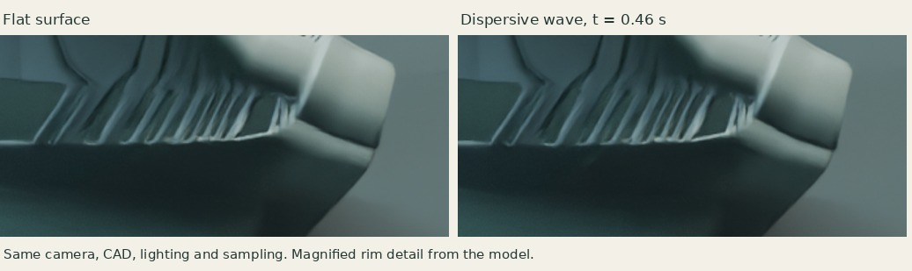
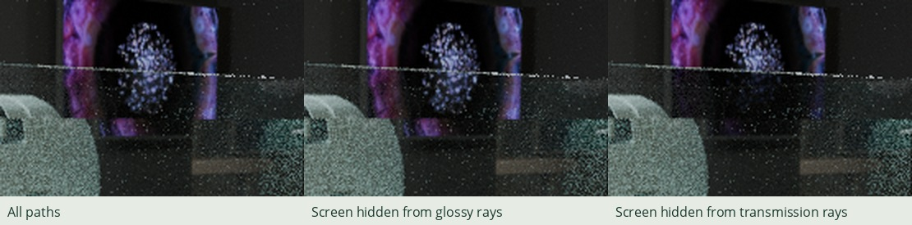

The bench film changes the relation between the two tanks. Before anything emerges in water, a pump on a table pushes a ball from a pink test housing. A hand then operates a phone among loose components. The following tank view lasts long enough to wonder where the hand has gone. The operator has moved outside the frame. The question of dependence survives the apparent success of the birth.
One recording in chronological order. Wide to fixed detail at edit 38.25 s, wide again at 49.4 s. The measured gap appears at 48.9 s. Original quiet audio and composed optical score.
Held VISAP catalogue preview, tank and digital population sharing a field of view. The catalogue identifies the image as an artwork preview. Capture method and venue are unspecified.
70.133–79.15
Water Beings, 49–58 s
Return to a changing group. The room can continue into another visitor’s arrival.
The artist’s workshop record identifies the water-inflated bladder and phone-controlled pump. These two bench inserts are from the author’s own linked test videos. They depict different experiments. The frame switch at 38.25 s uses extra resolution in the same 4K take. All source motion runs at source speed. The tank soundtrack is editorial; no biological sounds are used.
Do not synchronize this recording with a live motor. If shown alongside the early apparatus, give each a legible label and the attendant a visible way to indicate a pause. In a video-only exhibition the catalogue image shows how the artist presents the tank and population together. Test whether the loaded physical tank adds a genuinely different experience before committing to a wet installation.
In the revised sound mix, the two pitches describe different features. A fitted line on the carrier’s upper edge alters the low pitch. The measured gap controls the second voice. The low note holds its changed pitch after the silhouettes overlap again. The clean edit preserves the previously distributed picture stream. To reproduce the mix, generate the stereo score with the optional carrier-edge CSV, then run gallery_cut.py with the existing gallery picture as the third argument. Use gallery_export.py on the master for the captioned distribution copy. The 55-second return edit uses only camera sound during the physical take.
A copy for the gallery wall
The 1080p MP4 with permanent captions takes its image from the source files for each shot and its AAC track directly from the released web edit. The wide first-tank recording comes from 3840 × 2160. The fixed close view draws on a 1440 × 810 region of that recording. The phone test and second tank have 1920 × 1080 source frames. The digital population and pink test fixture have 1280 × 720 source frames and are enlarged. The catalogue preview is also enlarged. Captions and source labels render at the final projection raster. The resulting file is 1920 × 1080, 30 fps, 2,374 video frames, 79.15 s including the end of the sound.
The film was sampled at 25% and 75% of the duration of each of the nine edit segments. A 1600 × 720 interior crop excludes the two letter areas. At those 18 times, the projection encode preserved more picture detail by luma SSIM and PSNR against the source-derived, lightly compressed 1080p shot intermediates than the 720p exhibition file enlarged with Lanczos. This checks the specific encodes. It cannot measure how the work will look on a particular projector. Frame sheet · Sample results · Rebuild from artist sources
For frame-accurate playout at 30 fps, the second tank starts at zero-based picture 1,799 (59.9667 s), the catalogue preview at 1,954 (65.1333 s) and the closing population at 2,104 (70.1333 s). The first closer framing starts at frame 1,148 (38.2667 s). Rounded times in the room rehearsal serve as visitor cues. The burnt-in source labels and the English caption track switch with the actual cut pictures.
Camera sound and score on separate faders
The two lossless stereo stems share the film start and last 3,799,200 samples per channel at 48 kHz. The workshop-camera stem contains the bench test and overhead recording. The image-derived score has its own fader. Keep the MP4 audio muted when using them together on the same transport. At film 46–55 s the stereo camera stem averages −75.44 dBFS RMS and the composed stem −27.17 dBFS RMS. Audition them at their recorded gains before increasing level. The louder sound one hears at release was composed for the image.
The two decoded 16-bit files sum exactly to the pre-AAC master. Encoding that sum with the film’s 96 kb/s AAC recipe reproduces every byte of the published ADTS stream. Both source-specific fades are retained. This gives an installer a reversible way to listen to the camera recording and the movement-derived pitches independently. The analogue mix coming from speakers depends on speaker placement, amplifier gain and the room.
First research and production pass. The prior script took the first independent correction as the criterion of birth. That measure privileges motor competence. A newborn can be entirely dependent. Remove that test from the narration as a definition of who counts. Keep passive controls in the studio to understand our own images.
A material observation
J. Nawroth and colleagues measured juvenile jellyfish in different temperature regimes. At this scale, water adhering to adjacent lobes can bridge the gaps during paddling. The effective moving surface comprises both tissue and surrounding liquid. This is a result for these animals under specific flow conditions. A much larger silicone machine cannot simply claim the same mechanism. Examine the original video and velocity fields for timing and geometry: https://pmc.ncbi.nlm.nih.gov/articles/PMC2880069/
The visually productive mismatch: a seam opens and separate contours become visible, yet some fluid continues to travel with the departing body. When have we actually seen two individuals? Anatomical separation, shared fluid motion, and beginning a distinct history give different answers. Compare Gilbert, Sapp and Tauber on the plurality of criteria for biological individuality: https://pubmed.ncbi.nlm.nih.gov/23397797/ . Do not imply a robot–water system is a microbial symbiosis.
First shots to test
Begin almost motionless with a grazing light on the submerged silicone fold. Leave a glass edge or adhered bubble in the frame as a stationary reference. Let contact flatten the soft body locally. On release, first one pleat recovers, then another; water and wall motion decouple by degrees. Choose the camera distance from the real prototype dimensions. Use faint suspended tracers sparsely near that gap, each anchored in the velocity field. No particle fountain, outline illustrations, interface arrows, or captions explaining what the lens has not shown. Lock exposure, lens and tank geometry across the separation. End with a second generation occupying altered water before any first action. Keep causality honest if motion is a numerical approximation.
Preston and colleagues measured the effect of a water-channel protein on the osmotic permeability of frog oocytes. A visible outline can stay recognizably similar while the rate of passage across it changes. Ripley’s pipefish study asks a different question: how pouch fluid changes during gestation. Taken together they suggest two separate shots for a future tank shoot. Hold on the rim to see passage. Then stay with the carrier long enough to see whether the conditions it can maintain have changed. The robot’s bladder is hydraulically inflated, so describing the recorded release as osmosis would substitute a metaphor for its mechanism. Preston et al., 1992 · Ripley, 2009
In Water Beings, a previous generation changes the space available to the next when remnants accumulate. In the workshop tank a technician can remove the remnants and reload the same child. That difference merits a place in the exhibition. Resetting promises each visitor an equivalent encounter, yet erases the material history that makes the digital generations distinct. For a mock-up, leave the last three actual reset durations visible. The next visitor inherits at least this small history of the room. Never invent past cycles for a fresh installation. Artist’s account of Water Beings
Duration as a curatorial choice
Ukeles’s proposed exhibition CARE made repeated servicing part of the exhibition’s duration. For this installation that raises a practical authorship question: if the person who retrieves and reloads the child is visible in the work, who decides how their work is represented and who pays for that time? Offer the operator the choice of visibility, agree credit and staffing, and place maintenance records where visitors can read them without obstructing the service route. This remains one curatorial trial. Ukeles, Manifesto for Maintenance Art, 1969
Use Akerman’s Jeanne Dielman to study how a fixed frame lets a repeated gesture gather force. In the workshop footage a ball becomes exposed millimetre by millimetre. Moving the lens during that interval would give the film an expressive movement the apparatus had never performed. The 4K detail therefore holds still until the channel opens. The return to the wider frame gives the visitor back the carrier, which is easy to forget when tracking the departing child. Fondation Chantal Akerman, B. Ruby Rich interview archive
Which experience does the image belong to?
Iris Marion Young approaches pregnancy from the pregnant subject’s experience and describes a disturbance in the division between self and other. The tank camera occupies the position of an outside observer. It can follow a change in the carrier’s orientation. Its images give no corresponding first-person account of what carrying feels like. In the room trial a single red target even produces two images at one standing eye height. Invite a visitor who saw a separation to say what moved, from where they saw it and who had to be present. Leave the language of feeling to the person who offers it. Young, 1984 · Filled-tank camera test
Two lineages that look alike for an instant
In the choanoflagellate Salpingoeca rosetta, division can leave sister cells joined as a colony. Following the founder through division establishes a history that a single view of several adjacent cells could not recover. Wang’s digital ecology encodes a different relation: contact can spawn the next chromatic generation. In the overhead workshop take a previously fabricated body leaves a larger hull. Each picture can briefly show two forms touching. Each gives a different answer to the question of where the second form came from. That is why the wall label identifies the child’s separate fabrication even for someone who only sees the end of the loop. Fairclough, Dayel and King, 2010 · Fairclough on the documented life stages · Water Beings
In Anicka Yi’s In Love With the World, visitors shared the Turbine Hall with floating machines while a sequence of scents changed by the week. The visitor’s passing encounter and the installation’s longer environmental change belonged to different clocks. The corresponding exhibition test here is to stop the pump, leave its pause card visible, and let the film and digital population keep their own time. A visitor arriving in that interval still encounters an ecology and the labour required for its next demonstration. Yi’s work supplies a curatorial question; the apparatus and operating schedule proposed for Wang’s exhibition are specific to this study. Anicka Yi Studio, Tate Modern, 2021
The last contact takes more than one reading
At source 25.893 seconds a dark crescent can be seen between the pale surfaces. With small breaks left open, the 960-pixel mask distinguishes two pale regions 6.32 pixels apart. A closing operation reconnects the masks for one more picture. In the next frame at 25.926 seconds, the standard 960-pixel mask separates them by 12.17 pixels. A faint diagonal below the opening is still visible later, even with a broad green interval between the bright hulls. Water, a reflection, or a small physical connection would have different implications. The overhead angle alone cannot identify the trace.
The score’s 10 Hz measurements use a different clock from this consecutive-frame reading. Its 25.9-second onset belongs to an image rule. The film gives the space around that instant back to the viewer at normal speed. The 27-frame camera study lets someone linger over what the score has already called a separation. Seven mask choices at every source time.
The first continuous take changes the question. The small body takes much longer to cross the rim than to traverse its own length after release. The carrier yaws too. Movement belongs to the pair and to the water in the frame. The shot cannot resolve what produced each increment of motion. Keep the entire wait. In the next edit try cutting to the carrier after the visitor’s eye has followed the smaller body away.
Excerpt from the digital ecology. Rui describes seven chromatic generations and contact-triggered succession. This excerpt cannot identify all seven by eye.
Continuous real-time recorded tank view, prototype with rounded rectangular body. The smaller body emerges at the right; the larger body turns. Retain source audio in this shot.
Another take, visibly different physical prototype. Specular ripples and a copper-coloured interior. An editorial juxtaposition across versions. Source soundtrack omitted.
48.15–56.15 s
Water Beings, 49–57 s
Return to the digital population as another time scale. Source soundtrack omitted.
Project media are from Ruipeng Wang’s own published project pages: Water Beings and Born, Not Made. No third-party wildlife film or music was added. Reuse in this project study follows the artist’s request. No open redistribution licence is asserted.
The overview credits Ruipeng Wang (director, initial prototype, software and hardware), Vera Yu Wu (narrative discussion and visual expression), Jimmy Haochen Xu (video editing and Unreal Engine), Kexin Wang (material) and Leo Liu (music). Contributors listed there are Jacob Li, Yue Yang, Yufan Xie, Richard Haoxi Zhang, Chien Lu, Manini Banerjee, Kenza FeNandez and Sarah Omellas; confirm spellings against the artist’s credit sheet before final projection.
Material distinctions
The optical test uses the repository’s two printable STL files in millimetres. Their design belongs to the simplified split-shell proposal. Meshes, simulated milky material, light and displaced water surface are digital. The print plan describes mounting features and estimated fits and weights; the earlier exhibited prototype in the film has a different contour. The footage supports release in water. An actuator diagram in the overview describes a pump. Neither the overhead take nor the render measures force, confirms closed-loop sensing, or documents in-body printing. In the earlier prototype the offspring was made separately and loaded. See the artist’s technical presentation and the design file and print plan.
Shots to carry into the gallery
Kingma asks what would count as being part of a gestating organism. A fabricated chamber makes containment trivial to illustrate. It leaves parthood unresolved. Ask what the carrier loses on release: changes of orientation can be seen, changes of function would need another test. Kingma, 2019
Ripley’s measurements in two pipefish species distinguish pouch fluid from the surrounding sea and track changes in that relationship through gestation. The useful image here is a boundary maintaining a difference over time. The optical render can show a surface; it cannot show osmotic regulation in a robot. Ripley, 2009
Feitl and colleagues observed overlapping boundary layers at the lappets of small ephyrae. Their measured swimming regime makes the water between tissue lobes part of an effective paddle. In this film, compare attached water, a rapidly opening gap and the wake against an unmoving tank edge. A larger machine requires separate flow measurements. Feitl et al., 2009
Painlevé recalls missing a seahorse birth after thirty-six hours at the camera. A hand-operated bellows helped keep his filming subjects alive. The account changes where to put a second camera: the operator, the tubing and the apparatus that maintains the take. Use continuous capture, a fixed wide camera and a second locked seam-height lens for any new shoot. Start both before priming; keep running through reset. Black drape on the camera side and lateral light let the near glass remain legible. Painlevé, Feet in the Water
Mary Kelly’s dated feeding schedule and record of washing a diaper liner locate care in repeated acts with durations. Place the attendant’s reset log in the line of travel out of the room. A blank entry during downtime has as much consequence as a successful release. Invite the technician to decide what labour to record and whether their hands can appear. Getty Research Institute, Mary Kelly Papers
Production checkpoint • 28 November UTC
Source take and artist page inspected approximately 01:43–01:46. This assembly was encoded and decoded by 01:48. The 1280 × 720 local assembly is H.264 with AAC, approximately 56.19 s. Source motion runs at its recorded speed. Compare review frames. Shadow detail lifted slightly in the first tank take. The first Cycles plate took 44.64 s; a 10.46 s waterline proof revealed excessive bright noise and a visible corner of the water plane. The second render extends the surface toward the lens and revises light transport. Render timings are engine output, separate from time spent reviewing.
The sound of the first take is quiet. Do not attribute it to a hydrophone or a particular device. Measure its level at the room playback position and listen against the actual plant before choosing a mix. For a final quiet-room version, keep the film visually intelligible, label abrupt returns to the digital population, and credit each prototype independently. Current assembly is a study cut.
Looking twice at the last point of contact
A 480 × 270 re-analysis of the first tank recording at 10 samples/s finds a second pale connected region at source 25.9 s, or film 31.9 s. Its nearest edge is already 7 pixels from the carrier’s thresholded silhouette. By source 26.2 s the measured gap is 34 pixels. The young body was already visible before this threshold produced two distinct regions. Later, the mask loses it again. Overlap, occlusion, the frame edge and the colour threshold all limit what this measurement can say. Distances are image-plane pixels. Trace data · measurement script.
The second sound pass adds a composed stereo score. One narrow resonance can be heard before the mask divides; a second emerges as the two silhouettes become separable. Its pitch and stereo spread follow the image-space gap. The score makes the observer’s criterion audible. It supplies no evidence of a pump, valve or independent propulsion. The original tank track measured −74.0 dB mean and −40.1 dB peak by FFmpeg volumedetect. An initial 960 × 540 audio review measured −28.1 LUFS integrated and −15.1 dB true peak. The separate source and score can be remixed for the venue. Play with captions and muted for the silent visit.
Contact insert from the 4K camera file
Contact study · 20 s compares a fixed 1440 × 810 pixel crop of the artist’s 3840 × 2160 record with a full-frame view. Both are from the same camera, in chronological order. Source 15.15–26.40 s holds on the opening. At 26.40 s the cut widens, leaving the previous carrier on screen as the smaller body travels. The film never needs to animate a second release. Along the edge of the smaller body, the change from contact shadow to a visible green channel is legible at this scale. The crop discards the far tank edge, so it cannot replace the wide shot as evidence of relative whole-body movement. Frame review · edit recipe
The artist’s page credits Di Wu for 3D printing material and robotic arm work, Kexin Wang for arm control, Vera Yu Wu for narrative and visual expression, Jimmy Haochen Xu for visual development and Unreal Engine, and Leo Liu for background music. Credits on the overview itself describe the contributions for that version somewhat differently. Preserve both sets in context. The artist describes touch as part of the installation design. The two excerpts provide no timing evidence for touch, a heartbeat threshold, hydraulic pressure, or active steering. The VISAP catalogue preview shows a tank below a luminous population with bright shapes crossing its upper edge. It motivates an optical separation test. The catalogue gives no capture method, venue dimensions or visitor positions.
What the workshop record settles
The first tank movie on the artist’s portfolio is the same Vimeo source embedded twice in the 2025 HTMAA final project. The artist’s final assembly account explicitly says the phone interface commanded the pump and inflated the internal structure. Separate propulsion tests document an off-centre outlet producing rotation and a tube redirecting the jet. The child had its own pump. This supports operator control, a hydraulic release mechanism and prototype propulsion in this version. It does not locate a motor command within a particular frame. The pale hull and little wake can be seen; individual pump contributions cannot be separated from the image alone. Workshop record, final assembly and propulsion tests
The VISAP catalogue describes touch-assisted participation and the physical/digital pairing. It gives no measured heartbeat threshold or proof of in-body printing. Public labels should specify which apparatus, media and interaction are actually present on exhibition day. The first-generation phone-controlled test and the later public touch design are distinct. IEEE VIS Arts Program, Born, Not Made
The touch mechanism in the later documentation
The 150-second Born, Not Made film embedded on the artist’s project page is more specific than the exhibition catalogue. At 00:44.1 the artist’s annotated frame shows a hand on the mother and describes capacitive touch increasing pump drive to speed release. This is documentation of a particular touch-assisted implementation. It gives a defensible gallery label: “In this version, touch changes the pump drive.” The source supplies no pressure trace, response latency, heartbeat measurement, visitor outcome or evidence that the simple printable shell in the optical test uses the same electronics. The 2025 overhead take is separately documented as phone-initiated. Keep these material histories distinct. Artist’s project page, third embedded film · VISAP catalogue
Camera test for a new physical shoot
In the first take the thresholded gap grows from 7 to 34 pixels in 0.30 s on a 480-pixel-wide analysis image. That average change is roughly 90 pixels/s. At that scale a 1/60 s exposure would span about 1.5 pixels of gap change during that sampled interval. This is an estimate from the existing pictures. No shutter metadata or calibrated physical velocity was recovered.
Keep the uninterrupted wide camera at the gallery viewing height and show a fixed glass corner. Use a separate locked close camera pointed close to the pane normal, at the height of the mouth. For a new test, try 60 fps and 1/125 s on that camera, increasing light or opening the lens as needed. Verify focus through filled glass with a temporary scale placed at the release depth. Record that scale, then remove it before the take. Set exposure and white balance from the actual light. Test the lamps for banding at the chosen shutter before admitting visitors. The close camera can preserve more samples around the gap while the wide view holds the full duration.
Before a cycle, record the pump alone, room tone at the seated ear and a brief common audiovisual sync cue. Document the operator command and the time it occurred if it will be discussed publicly. Continue recording after the child moves beyond the close view. Keep the older body and whoever performs the reset in a wide frame, subject to consent. The proposed shot list does not establish how much control or agency caused any past movement.
The carrier keeps its new orientation
A counted gap has two endpoints. At source 36.8 s the mask becomes one region again as the small body passes behind the carrier in the image. The carrier itself still looks different from the beginning. To measure this independently, we followed the long upper edge of the larger hull across a fixed band of columns in a 960 × 540 monochrome image, sampled at 10 Hz from source 22 s. At 25.5 s the projected angle is +1.2°. At 36.8 s it is −9.2° relative to image horizontal, with clockwise angles positive. These are image-plane orientations. A single camera cannot resolve body yaw, pitch, roll, parallax or force separately. Edge comparison · Sampled orientations · Measurement code
The first attempt tracked two slot ends by texture. As light changed, a dark point in the lower slot became the stronger match, and apparent landmark spacing drifted from about 142 to 155 pixels. This made the slot tracker unsuitable for the score. The upper outline gives a more inspectable reference. The replacement measurement repeats the fit in three horizontal bands at three brightness thresholds. Across 164 samples the median span among the nine estimates is about 0.5°. One sample at 26.9 s has an 8.3° span. Use broad changes across the take. Neither instantaneous angular acceleration nor an exact physical impulse is justified.
In the 79-second edit, the low voice shifts roughly 11 Hz as the carrier turns. The second voice remains tied to the image-space gap. The carrier stays audible when the silhouettes rejoin, just before the cut to the second tank. The sounds interpret two different observations within one take. The unscored 55-second return study supplies a comparison with quiet source sound only.
Set exposure against the actual release speed
Between source 25.9 and 26.2 s the child’s measured centre moves from (349.1, 120.4) to (379.3, 125.4) in the 480-pixel-wide tracking image. The average projected speed is about 102 px/s at that scale. With the same framing on a 3840-pixel-wide sensor that is about 816 px/s. An object moving this quickly would travel roughly 14 sensor pixels in a 1/60 s exposure and 3.3 pixels in a 1/250 s exposure. The source shutter and three-dimensional speed are unknown. Rotation and the threshold used to find the centre also affect the estimate. Measured positions
For the next shoot, take two short tests of the same loose moving target at the filled tank. Hold framing, focal plane, aperture, gain and white balance. Try 1/60 and 1/250 s at the same frame rate, adding light to match exposure at the faster setting. Check on the intended projection whether the faster sample resolves the last gap and whether the slower one better conveys its duration. Check light flicker and reflections with the camera running. Put a ruler in the plane of motion for calibration, remove it for the take and keep one tank feature in frame. The locked wide camera should continue through the entire return and retrieval, even if the close camera loses focus. Use an actual operator’s consent before including identifiable reset work. Five dry and filled alignment views
A film-wall rehearsal for Birth in Water. The last two seconds of the overhead take change the story. The smaller hull rounds the far side of the tank and passes behind the larger outline in projection. From overhead the two become one region again. Whatever has happened to their relationship, counting silhouettes has ceased to tell us how many bodies there are.
Edit
Film time
Source and treatment
0.00–8.01 s
Ruipeng Wang’s Water Beings, approximately 5–13 s. Recorded digital population, enlarged from 720p.
8.01–46.41 s
All 1,151 frames of the first physical tank recording, in order. Fixed overhead field of view, 4K source downsampled to 1080p. Quiet synchronous source audio with short edge fades.
46.41–55.42 s
Water Beings, approximately 18–27 s. The group is visibly denser. The interval between these excerpts is an editorial omission.
The opening and closing have silent soundtracks. The physical sequence has no composed score, reframing, or speed change. The first ecological excerpt recurs at the loop seam, where the population suddenly thins. It would be misleading to call the seam a simulated mass death. The player names both source types throughout playback. Digital recording · Physical recording · Artist’s workshop record
What the image allows
At about 00:30 of the 150-second film on the artist’s project page, the first-prototype caption already describes the child swimming back to its mother’s side. The return is part of the artist’s own account. This edit gives the viewer the duration of the full take to look at how it happens. Artist’s film, first prototype passage
The first two masks separate at source 25.9 s. The largest measured gap is 152.7 pixels at 31.9 s, at a measurement width of 480 pixels. At 36.7 s the gap is down to 8.5 pixels. At 36.8 s the masks merge. The track cannot then resolve the bodies individually. Residual perspective, the edge of the camera frame, and the threshold affect this measure. There is no side view to resolve the vertical separation or to demonstrate contact, docking, recognition or intent. The return makes the carrier visible again even if the audience missed the release. Image measurements · Four frame review
Try the film beside a paused tank
Start the film before opening. Post the live status on the physical tank where a visitor can read it from the lateral bay. The recorded film needs no gestures from visitors. Leave the wall luminous during a service pause, unless the operator needs work light that makes the image illegible. In that case move playback to the shielded display for the trial. Avoid bringing up the entire room merely to retrieve the smaller hull.
Arrival in this film
Visitor stays
What they can encounter
29 s
17 s
The large body turns, the child moves toward the far wall and the visible gap closes again.
42 s
12 s
A returning body comes first. The next image is a crowded digital group. Ask what the visitor thought they had walked into before revealing the beginning.
50 s
18 s
The digital group thins across the seam, followed by the early tank. Someone can leave having seen the carrier holding the child throughout their physical view.
33 s, silent
14 s
Release and return are both visible. Test the captions from the bay at the proposed display size and with a standing visitor crossing.
Live pump paused for 120 s
Variable
The recorded player completes at least two cycles. The physical status and actual operator restart time stay independent. A visitor can leave after a complete recorded observation.
The longer exhibition edit shows the bench operator. This one holds the whole return. Run them successively on the same wall during rehearsal. Two films of the same release running at once could make a single event appear repeatable on demand. Record whether a visitor could identify who prepared the live tank and whether they saw what happened to the larger body. Keep both unanswered if no visitor has tried the layout.
Sophie Lewis describes how an emphasis on birth can obscure gestational work. For the live version, place the preparation log where the visitor who just watched the return can read who loaded the child and when. Ask the operator whether they want their name or role displayed. An empty log before the first cycle is accurate. The workbench, paid care work and human gestation have different material and political stakes. Sophie Lewis in conversation with Marie Glassl, 2023
The pump drives in the workshop tests, the later capacitive touch implementation and the STL optical model belong to different evidence. Only the first overhead recording appears in this physical passage. A visitor can observe the return without inferring an automatic homing behavior. Sources and credits
In the first shot the pan is full of motion. Ripples pass a shell wrapped in white tape. In the second, the camera briefly loses the floating body. When the camera finds it again a wire leads back to a hand. A person and the bench apparatus remain inside the frame of the experiment. It would take another shot, with independent controls and a fixed camera, to decide how much propulsion each component supplied.
The 26-second film joins Ruipeng Wang’s two complete 2025 workshop recordings in the order of his journal. The pink shell occupied the pan floor in his account. A later test put the pump in sponge. The wire, hand and loose electronics in the second recording remain visible. The two demonstrations differ in vessel, support, framing and operator action. The films give the gallery a way to discuss the conditions for movement when the overhead release alone makes the machine appear self-contained.
All 611 pictures. The vertical 9:16 recording fills the height. The label occupies the unused side of the square. The intermittently empty field of view stays in the film.
Both stereophonic camera tracks run at recorded gain. No added score, pump sound effect, tracking stabilisation or time remapping was used. The first take is 30 fps and the second is 30,000/1,001 fps. Titles remain outside the recorded pictures. The four source renditions and the actual artist links are recorded in the source register. Workshop journal · Decoded frame sheet · Rebuild the film
For a technical walkthrough, screen this after one complete 79-second loop and then restore the exhibition file. The wet apparatus can stay paused. Ask observers which body they considered to be the mover before and after the hand entered. This is a possible gallery exercise. No visitor responses have been collected.
The earlier Artistic Version developed Witness, A Stranger and The Night Shift. Keep their different questions alive in one trial. On entry a visitor encounters two bodies whose relation is uncertain. A witness cannot command a birth. On exit one can see who restores the conditions for another cycle. This sequence is a curatorial proposal, not an account of visitor reactions.
The current two-screen rehearsal puts recorded tank footage on the north wall and a separate recording of the digital population on the east wall. The live seam-camera proposal below was an earlier option. It would require an installed camera, a separate signal route and a clear label. The present two-player test uses the two recordings.
Walkthrough for a black-box mock-up
Start at the door during reset. A newcomer sees the operator setting the folded body back into the chamber. Let this work be legible: inserting a prefabricated body is different from the proposed internal printing process. A person who arrives only for these ninety seconds should be able to tell what someone had to do for a birth to recur. Time the actual reset before determining exhibition frequency.
Move sideways toward the tank. Set one fixed axial underwater camera at seam height. Its live, uncut feed goes to a sidewall where the glass does not reflect the brightest image back over the body. Test the projector with a black field and then a white field; photograph glare from both seated and standing positions. A visitor should be able to see actual release and magnified contact without turning their back on the tank. Distinguish the live feed, the recorded rehearsal, and the simulated generations by their locations and short permanent labels. Do not synchronise unrelated projected motion as proof of sensor response.
Seat two visitors; have four others enter mid-cycle. Can someone staying seated see the last point of contact without depending on the generosity of a standing front row? Try an open lateral bay rather than a second row behind shoulders. Mock up the tank lip, visitor heads, projection and sightlines at full scale before specifying pedestal height. Leave an accessible route into and out of the bay. Walk the venue with its access lead before freezing dimensions.
Listen at the tank, then at the doorway. The onset and cessation of the actual pump are evidence of support being supplied. Audition contact-mic and room-mic tracks separately; record the same cycle with the pump alone to identify motor-borne vibration. An amplified pulse should not accidentally drive the water it purports to document. Keep ambient cues captioned. Run the entire visitor test in silence and with no touch input. An optional visitor gesture can affect one observable parameter only if implemented; an unattended cycle should still be meaningful. If there is a fault, disclose that the live apparatus is paused and offer a dated recorded take.
Curatorial argument
Every birth rearranges the obligations in this room. The two machines separate; care may shift to a pump, to the visitor who stays after release, or to the technician who will return at closing. Water makes some of these dependencies palpable and conceals others. The final image could hold on that technician’s hands rather than attributing an entire ecology to an autonomous machine. The juxtaposition with Water Beings is exact at one point: an individual leaves consequences in the conditions encountered by another. Which consequences persist in the tank, and who is paid to remove them?
Empirical counterpoint to a benevolent primordial ocean: developmental conditions and oxygen availability within aquatic brooding environments are actively maintained and can be limiting. Taxon-specific research: https://pmc.ncbi.nlm.nih.gov/articles/PMC4632610/ . No claim that the robot respires.
Questions carried forward from the conversation archive
Wang’s archive paraphrases his interlocutors; it is not a transcript or a record of curatorial approval. The three earlier exhibition films also remain alternatives. The following choices can be tested separately.
Can the two systems affect each other? The discussion with Zach Lieberman asks for a technical relation between screen and body. In this cut, two measured changes in recorded hull outlines drive two audible pitches. That is an implemented relation from an image to a score. The gallery population and wet apparatus have independent clocks. An apparent flash in the tank can come from the population screen itself. Black out that image before describing a live response to a visitor.
What belongs to touch alone? The archive describes Mark Feldmeier’s interest in the faint pump action felt through a hand on the carrier. A person watching quietly from the bay can follow the gap and the carrier’s turn. They cannot feel that action through the screen. Keep the documented touch encounter available as a separate supervised possibility when the installed prototype supports it. Ask a visitor what information each position gave them; a silent visit and a tactile one need not produce the same answer.
Can this offspring carry another? Blaise Agüera y Arcas and Steve Mann raised the next-generation question in different terms. The recorded offspring was made in advance. The main cut returns to a seven-generation digital population while the physical child is still a first-generation demonstration. At reset, identify the body being reloaded. Seeing the scene twice can otherwise resemble seeing two generations. Vera Wu’s interest in a group that grows generation by generation remains a future installation question.
In Mary Kelly’s Post-Partum Document, feeding charts and traces on nappy liners belong to the same installation. Later sections move into utterances, marks and diary entries. A chart made by a carer and a mark left by a child give access to different parts of their relation. In this gallery a staff record can say which physical hull went back into the carrier. Only the overhead camera can give the visitor the particular view of two pale contours moving apart. Keep the distinction visible. Mary Kelly, work and materials for the six parts
Print the return record and room handover on two separate A4 leaves. Offer the first sheet on the dry reading route. With the operator’s agreement, write the actual time, identifiable hull or “unknown,” and the change observed before the next release. A row can remain open. Start the display with a blank sheet; the existing camera records do not document the reload. A second demonstration with the same body can now have a history without being counted as a second generation. Put the staff sheet at the dry bench and keep the tank-status sign independent.
For a four-hour opening with uninterrupted supervised wet operation, the proposal needs four hours of competent operator coverage plus four hours of floor coverage when the group needs directing. As an example, one fifteen-minute break for each person leaves thirty minutes of separate duties to cover if breaks are staggered. The wet operator’s relief must know that prototype; otherwise announce a film-only interval. Allow additional paid time to prepare, inspect and close the apparatus. These are staffing arithmetic for a trial opening, not venue hours, labour conditions or an artist-approved operating schedule.
Proposed floor plan and viewing section, dimensions in metres
This working drawing assumes an 8 × 6 m room and proposes a 1.8 × 0.65 m tank envelope. Measure the venue, cabinet and waterline before specifying furniture. The separate staff bench keeps the wet reset route behind the tank. The projected population can continue while the live tank rests. The film screen carries a permanent “Recorded tank studies / Water Beings simulation” legend. The film has its own clock.
Walkthrough
Timeline or geometric test
Outcome in the drawing or edit
Arrive mid-loop
Enter at film 48 s. The measured gap appears 0.9 s later. After 12 s, the view changes to the second prototype. A 20 s stay ends on the VISAP artwork preview.
A viewer sees two distinct tanks with no introduction. Add permanent object labels with stills of both prototypes next to the screen; label the digital work by title.
Arrive after release
Enter at 72.5 s. Stay 25 s. Encounter the digital population, the loop splice and the hydraulic bench test.
The visitor can leave before the next release. Display the complete loop duration and give a seat alongside the accessible bay. Avoid a countdown that promises a live event.
Seated / standing
Project the seated bay’s plan ray into section. Its horizontal run to the release is 1.78 m. It reaches the front glass 82.8% of the way there. At eye heights 1.12 and 1.62 m the corresponding ray heights at the front glass are 1.037 and 1.123 m.
Both pass above the proposed 0.68 m opaque plinth and below the 1.24 m top rail. The standing ray is close to the 1.13 m waterline: conduct an actual glare/refraction test and move the standing mark if needed. Treat these as dry straight-line calculations.
Four standing, one seated, one arriving
Place four 0.42 m discs at the marked group positions. Sight ray from the lateral bay at (2.55, 2.45) to (3.50, 3.96) never crosses their occupied x-range ≥4.24 m. Walk the sixth person along the south bypass.
Clear in this arrangement. A visitor standing at (3.0, 3.15) would obstruct the ray. Move group orientation sideways; use floor marking and attendant observation. Tape wheelchair turning and exit routes at full scale.
No touch, silent
Mute the 79.15 s exhibition file and review the frame sheet. The first body emerges over the course of one continuous shot, and the second tank’s glass edge stays visible.
A viewer need not touch anything or hear a cue to perceive release. Without labels the change in tank could read as a reverse angle. Keep both prototypes named on the wall.
Pump stops during a visit
Tabletop scenario: at 0:00 stop the live apparatus; at 0:15 post “Live tank paused”; at 0:30 allow viewing of the independent 79.15 s film. At 2:00 the operator is still inspecting.
No missed restart deadline. The host keeps the bay available. The operator records fault and actual restoration time; leave the notice in place until a supervised cycle succeeds. Film playback never substitutes for the live status indication.
Build and staff test
Black out the film wall first. With the tank lights on, bring up the brightest digital frame and step through the seated and standing marks. Flag any screen reflection over the release point. Try a hooded directional display on the left if projection cannot be isolated. Keep path and edge lighting available throughout. Stand at the door with pump only, film only and both running. Check whether visitors can converse and hear the host; reduce playback spill before increasing gain. Keep amplification mechanically separate from the tank stand.
One trained operator needs access to drain, top-up, dry tools, replacement child and priming supplies. A host is needed during crowded resets unless the gallery can cover visitor routing from its floor staff. Agree handoffs, breaks and shutdown authority before opening. Confirm loaded weight, floor capacity, power protection, service access and venue water procedures with the installation team. Run several complete supervised cycles, time retrieval, loading, priming and release separately, and write the median and longest reset on the operations sheet. The proposed dimensions, visitor paths and sample interruptions above were tested on paper and against encoded images; no audience observations or measured pump recovery times are claimed.
Witness, A Stranger and The Night Shift remain possible alternatives. This plan tests whether a visitor can move from encounter to sustained observation to an account of care while also leaving after any one of those experiences. The mock-up can fail that test.
Two simulated seated perspectives, clear bay and blocked bay
A second geometry check projects the same room from the seated eye toward the proposed release location. Four marked standing positions intercept zero centre sight rays; a fifth person stepping diagonally into the bay intercepts one. This is a pinhole view and a centre-line intersection against assumed opaque bodies. Test the effect of heads, the tank rim, reflections, different chair heights and real turning space in the venue. Reproducible calculation
How often would someone actually see the release?
For a uniform arrival around a 56.2 s film loop, a visitor staying 20 s has about a 36% chance of seeing the first prototype’s single separation instant. A 10 s visit has about an 18% chance. These are exact window/period ratios under the stated arrival model; real dwell times need observation. The 79.15 s exhibition edit lowers the corresponding 20 s probability to about 25%. Its bench sequence gives those visitors another event to encounter. Ask someone who saw only the pump test what relation they think it has to the tank. A second screen repeating the climax could improve coverage while reducing the value of the wait; test this as a curatorial choice.
Two possible playback positions
The plan offers a testable acoustic choice. With identical direct sound at the seated listener, how much reaches the entrance? Coordinates below use metres in the same 8 × 6 room. The assumed entrance listener is at (0.45, 0.64, 1.50) and the seated ear is at (2.55, 2.45, 1.12).
Playback source
Distance to seated ear
Distance to entrance
Predicted direct level at entrance relative to seated ear
At the film display, (1.40, 5.80, 1.485)
3.56 m
5.25 m
−3.4 dB
Small speaker on a separate stand outside the bay, (2.35, 3.55, 1.05)
1.12 m
3.50 m
−9.9 dB
The comparison uses 20 log10(seated distance / entrance distance) for a free-field point source. It gives a reason to test the nearer position: about 6.5 dB more direct-sound separation for the same level at the seat. It does not predict the installed sound level. Reflections, low-frequency room modes, source directivity and other visitors are absent. Bring both positions up to the same measured level at the seat. At the entrance, compare intelligibility and recorded level against pump-only background. Check the standing group and the live operator as secondary listeners. Keep the stand, cable and its base clear of circulation and outside the taped turning circle. A quiet or caption-only presentation remains available. Acoustics Lab, direct and reflected sound
Camera rehearsal of the proposed room
Open the six switchable views. The room uses the plan coordinates, two true-scale project STL meshes, a 9 mm modelled glass front pane, a nominal 1.13 m waterline and film frames on emissive display surfaces. The mouth of the 390 mm head faces the lateral bay. The 1.12 m and 1.62 m eye positions share the same plan mark. Neutral human-sized volumes stand in for visitors. Their posture and behavior have not been observed.
In the first test, the bright digital image at the right crosses the outline of the tank. Through the seated view, a clear line to the mouth therefore still competes with another image. The fifth standing position blocks most of the carrier. The lighting variant changes both the liner and the cross-light. It brightens the lower tank, but leaves the north-wall image in the glass. In the last test the digital image moves to the east wall, centred at (7.88, 4.85, 1.46); both the material and the seat stay fixed. Compare the right-hand pane. A person now needs to turn farther to see the digital image. Mark both wall options on site before fixing the projector position.
These are ray-traced design comparisons with approximate transmission lighting. They do not measure venue illuminance, contrast through actual glass, wheelchair access or crowd behavior. The printable north elevation describes the baseline candidate. The plan marks the east-wall test with B. The four-second moving comparison identifies transmitted screen light in the upper-right tank image.
Decide the scale before quoting the installation
The modelled water block is 1.777 × 0.627 × 0.442 m, approximately 492 litres before the body and fixtures displace water. That represents roughly half a tonne of water before glass, stand and equipment. The 8 × 6 m mock-up tests a sightline; it does not establish a need for a vessel of this size. At an assumed fill rate of 10 L/min the model volume would take about 49 minutes merely to fill. Actual fill rate and allowable drainage route are venue dependencies. The early work used a glass fish tank. Measure the available original tank and prototype first; the VISAP catalogue preview has no scale bar. Compare a smaller live tank with the wide film image at the same two eye positions before pricing a larger vessel.
Budget separate lines for tank and plinth, approved handling and routing, display and independent playback, baffled lighting, spare wet components, technical installation time and floor-host coverage. Separate the exhibition’s daily operating hours from supervised live-release windows. During other hours the film and accurately marked apparatus may remain legible. Set actual costs, vessel size and staffing only after the venue and artist choose the physical version.
Can the film wall help while the tank is blocked?
The Singapore photographs of Water Beings show visitors bending over a circular image in a low, open-topped vessel. One person reaches a hand into the visible field. Another image groups several dishes. They establish a downward encounter and the possibility of moving around it. They do not document wheel clearance or reliable touch detection. The VISAP catalogue for Born, Not Made pairs a tank with a projected lineage. Its preview image gives neither an eye height nor a picture of a visitor. A low tank viewed through a side and an overhead film therefore offer genuinely different positions in this rehearsal. Water Beings, installation photographs · Born, Not Made, catalogue and artwork preview
The seated-turn test puts the eye at (2.55, 2.45, 1.12) m. Four standing proxies occupy the group side. A fifth moves 1.23 m sideways from (4.23, 3.15) to (3.00, 3.15), then stops. At frame 24 of a 12 fps rehearsal, about 1.92 s in, its torso first intercepts the centre ray to the release mark. The standing proxy remains there. A ray from that same seated eye to the film centre stays clear for all 120 samples. With otherwise identical geometry, 1.00 and 1.30 m eye heights also lose the mouth at frame 24. At 1.62 m the interception starts at frame 25. Raising the eye by half a metre buys about one frame in this particular trajectory. The entrance and staff routing must keep the diagonal open if continuous sight of the actual release matters.
From the same seat, the film centre lies 51.1° horizontally from the model mouth. The animated camera turns through that angle in 2.4 seconds. Its position stays fixed. The visitor proxy continues to hide the tank while the real recorded child returns on the screen. A visitor who cannot comfortably turn that far needs another seat orientation or display placement. Rehearse both from the same turning bay at full scale. A source label at the live tank should still be legible after a visitor looks back.
This test checks direct rays to two fixed points. It uses ellipsoids for occupied space and scripted camera movement. It supplies no data on a person’s comfort, pace, neck motion or willingness to turn. Captions and physical notices need separate distance and glare tests with visitors.
Does the exhibition vessel accommodate the project geometry?
The joined head and tail STLs used in the room renders occupy 721.4 × 314.0 × 336.0 mm in their registered body axes. We rotated the horizontal convex hull of the mesh vertices between the inner faces of the 9 mm glass panes, 1,781 × 631 mm apart, starting at the model’s actual docking origin. The optical water mesh stops 2 mm short of each pane, so its width is 627 mm. The convex hull suffices for testing enclosure in a rectangular tank. The near pane starts about 93.5 mm from the model at the documented orientation. A +30° yaw at that fixed pivot overshoots the near pane by 23.6 mm. The last clear sampled poses, in 0.1° steps, are +25.2° and −42.9°. The asymmetry follows from the off-centre starting position.
Moving the pivot by translation could extend the clear heading range to approximately ±51.0°. A full broadside position requires 721.4 mm of interior width before any clearance. The maximum projected breadth across all sampled headings is 725.3 mm. These are bare rigid-mesh bounds with no operating margin, detached child, cable, deformation, approach path or space for hands. They cannot size a working vessel. They do show that the proposed room tank cannot host unrestricted turning by this CAD shell. A large volume alone does not guarantee a useful swimming envelope.
The public prototype uses another body. Rehearse its real swept footprint and support equipment, then decide whether a wet display, a physical model with the recorded release, or a different vessel serves the work. The archive’s print plan estimates approximately 26 and 27 hours for the simplified head and tail at its assumed flow. Its 390 mm head exceeds the nominated H2S build height. A modelled optical appearance does not establish that either component was fabricated for a prior exhibition. Plan comparison · Calculation · Repository print report
Make a pause visible from the bay
The first A4 status notice was mounted at (3.36, 3.695, 0.52) m on the cabinet. Its lower edge is cropped when the seated camera looks at the opening. The next trial moved the same notice to a dry stand at (2.89, 3.82, 1.09) m. The heading remains visible on the left even as the fifth visitor blocks most of the tank. The final card uses a larger heading and a single action. The actual notice is diffuse paper in these renders. Lighting and legibility require an in-room test at the visitor’s own distance.
The stand’s 180 × 160 mm base is about 0.53 m beyond the modelled turning circle at its closest point. It is close to the cabinet, so an attached bracket may better preserve the floor route. Mock up the card at its proposed reading height before fixing any support. Display only the face matching the actual tank state. The operator records the last check on the pause card and changes it when a supervised demonstration begins. If the venue can assign only one person, pause the public demonstration before that person leaves the tank to retrieve equipment. A4 cards · Four rendered placement trials
A reset position that the operator can occupy
The first bench ran from y = 4.60 to 5.40 m. The back of the tank is at y = 4.35 m. The resulting 0.25 m gap was implausible for the proposed reset. Placing a proxy at (4.00, 4.85) makes the conflict visible as the worktop passes through its body. The revised 2.60 × 0.60 m bench occupies y = 5.37–5.97 m. It leaves 1.02 m at the rear of the tank and keeps the public-side sightline geometry unchanged. The bench width and location are a trial within the assumed room. The earlier six camera views and the seated-turn sequence retain the first bench. The updated plan and service comparison show the revision.
The dashed staff route enters the rear band from the east. Its connection to a real staff entrance, the drain and equipment storage still needs a survey. Have the operator walk in with the actual container, reach the child, turn toward a dry receiving tray and leave without crossing the seated bay. Note whether a second pair of hands is necessary. A diagram that fits a stationary torso cannot establish reach, turning comfort, ability to lift, or time to restore the apparatus. Before and after · Revised plan
Read the actual caption from the proposed seat
At exhibition time 49.5 s, the smaller source label and the lower caption occupy different parts of the film wall. In the decoded 1280 × 720 frame, the word “First” in the upper left and “water” in the lower line each have an 18-pixel-high word box. At the proposed 1.90 m picture width that is about 27 mm of lettering. Their positions relative to the eye matter. From the seated mark the two boxes subtend about 22.5 and 25.6 arcminutes vertically. From the entrance they subtend about 17.7 and 17.5. These values use the angle between rays to the top and bottom of each measured word, with the flat screen centred 1.485 m above the floor. They are geometric predictions, not a standard or a finding about readers.
Print the two full-size caption fragments on one A3 sheet at 100% and measure its 100 mm rule. Cut out the actual frame regions and tape them at the marked heights and offsets from the left picture edge. Record where each reader can comfortably read the fragments, then repeat on the playing screen with the tank lights on. Keep both tests silent. Projector black level, focus, movement and each visitor’s reading time can change the result. Generate the proof from the film
A separate test places a standing reader at (1.95, 4.18) m, between the seated bay and the film wall. With the actual 49.5 s film frame on screen, the reader covers the whole lower caption for the seated viewer. An eye at the entrance can still see the words, though they appear smaller. Shifting the standing mark 0.77 m east clears the view from the same seat. These three images use the revised bench position. In a venue mock-up, let two visitors choose their own places first and observe where they stop to read. Keep an open view from the seat without treating a standing visitor as an obstruction to be policed. Three rendered views
Direct rays to bright text pixels provide an independent check. Within the source-label and lower-caption rectangles, pixels whose decoded R, G and B values all exceed 200 count as letter interiors. The centre-position proxy intercepts 215 of 1,403 source pixels and 2,718 of 2,718 caption pixels from the seated eye. At the doorway or with the side mark it intercepts zero in either region. The counts use the final 720p encode. The room renders use the preceding encode of the same shot at the same time. The model uses ellipsoids for head, torso and legs. It says nothing about a reader’s posture, ease of reading, accommodation or willingness to move. Calculation · Room rendering
Aim the camera with the tank full
The dry section above gives the geometric clearance of the plinth. For camera alignment through the side glass, light bends at both interfaces. In the mock-up the tank mouth is at (3.50, 3.96, 1.02) m. We put a removable red target at that position and removed the body for an alignment trial. Both cameras keep the glass and the target fixed. Only the presence of water changes.
From the 1.12 m eye, the calculated ray crosses the outer front pane at (x, z) = (3.339, 1.037) m with air behind it and (3.382, 1.032) m when filled. From the 1.62 m eye, the corresponding heights are 1.122 and 1.092 m. The filled standing ray meets the outer pane about 38 mm below the nominal water height. The previous dry straight-line test put that crossing much nearer the waterline.
The calculation uses Snell’s law for parallel planar layers with refractive indices 1, 1.49 and 1.333. The render has the same nominal indices and retains a small numerical gap between water and glass. In the first seated render pair, the centre of the 16 mm red spot moved from image coordinates (641.7, 359.8) to (684.5, 363.8) in a 1280 × 720 picture, a visible change with the lens and camera clamped. This is a test of the proposed geometry. Actual lens, pane thickness, water level, flatness and viewing marks require measurement. Set the target in the empty room, fill the tank and check framing again before placing the prototype. Ray calculation · Render the dry and filled controls · Agrawal et al., multi-layer flat refractive geometry
The 1.62 m eye produces a further result. In the dry image the red target’s main region is at (641.5, 360.6) px. After filling, the two largest red components lie at (684.9, 382.6) and (642.1, 291.3) px. A fifth render places a 3 mm thick matte cover on top of the water, clear of the lower viewing ray. The upper region disappears. The lower one stays at (684.8, 382.4) px. The cover also changes the illumination. This isolates a surface-dependent second view of one reference point in this model. It does not explain the two bodies in the artist’s overhead recording. Mark the real sightlines with the actual water level before placing a second camera or a bright label close to the surface. Five inspected renders
Four visits during one staffed window
Rehearse six minutes with separate film and tank clocks. Enter the actual measured reset once one exists. Each interval describes whether the operator is available for public demonstration, reloading, or dealing with a fault. The public release time stays unknown. The recorded separation repeats at 48.9 s within each 79.15 s loop.
With the sample inputs, the seated visitor’s 50-second stay includes 15 seconds of staffed viewing and 35 seconds of routine reset. A group of three arriving at floor time 1:48 spends 7 seconds in routine reset and 43 during the fault pause. The visitor arriving at 3:25 stays 100 seconds, catches the recorded gap at 4:04.35, and encounters 40 seconds of potential staffed viewing after the operator clears the tank at 4:05. Leaving the clearance field blank keeps the tank paused throughout that late visit while the film event still occurs. These are synthetic arrivals and editable operator assumptions. A host can record the actual times on the A3 sheet and run the rehearsal again.
A one-speaker sound check
The proposed independent stand beside the seat can reduce spill from the film wall. A routing choice also changes which body is most audible. In the released stereo file, the second voice moves toward the right as the measured gap grows. The mono commissioning cue repeats exhibition time 46–58.5 s three times at its encoded gain. First it takes the left channel, then half the sum of left and right, then the right channel. Between passes it leaves 0.75 s of silence. The 30 ms edge fades are local to the cue. The gallery master stays stereo.
Across the one-second interval beginning at film 54 s, the 140–175 Hz band in the left channel is 3.981 dB below the arithmetic mean feed. The right is 2.722 dB above it. The 90–115 Hz carrier band differs by less than 0.02 dB. Sending just one original channel to one speaker can therefore make the child sound markedly different while the carrier scarcely changes. Use the centre pass to compare the two speaker positions at matched measured seat level. Record pump-only background, film-only and combined conditions at the entry, seated mark and operator station. Give the venue team the choice of a directional source, a closer source or caption-only playback after that test. No listening geometry or room acoustics was captured in the WAV. Cue player · Band results · Make the cue from the film
Where to read about the two tanks
The A3 object label shows three uncaptioned frames from the film at 3.0, 49.7 and 62.2 s. A visitor who saw only the last prototype can compare it with the earlier carrier and with the digital population. The centre of the sheet is 1.35 m above the model floor. The reading trial places the eye about 0.79 m from the paper. The enlarged screen captions continue to serve someone who stays in the seated bay.
The first sheet went on the west wall at y = 4.70 m, with a reader centred at x = 0.80 m. At the doorway that reader covered 323 of 2,718 bright lower-caption samples from film 49.5 s. From the seated bay the reader covered none. The second location places the sheet on the east wall at y = 1.95 m, with the reader at x = 7.20 m, beside the dry south route. Both sets of caption rays from the entry and bay now clear the reader. The route to that label is longer from the seat. Test travel distance, reach and the turning space with the actual visitors and chair; offer a loose copy near the seat. The plan marks this location and both population-wall alternatives.
Five matched room renders used the two reading locations, the door and bay views, and the actual printed label at seated reading height. A model spotlight aimed at the paper increased the median grey level of a quiet upper paper patch from 153 to 168 on an 8-bit image. The corresponding lower patch changed from 149 to 156. There is a top-to-bottom gradient. Read the sheet under the installed lighting before choosing the mounting angle. These are image samples, not lux measurements. Doorway and reading views
A seated visit during a tank reset
Play the 16-second room film or inspect six moments. The head turns from the near tank to the north-wall film without moving the eye from its 1.12 m mark. A fifth visitor crosses in front of the tank. The wall is already showing the first prototype. The seat recovers the film before the pale outlines separate. At 15 s the image cuts to the blue tank of the second prototype while the printed pause card stays beside the physical shell. The same sequence can be followed with the sound off.
The camera turn starts at 1.6 s and ends at 3.55 s, covering roughly 51°. Visitors and staff are position proxies. A real wheelchair user may prefer a different angle or to move the whole chair. The animation does not establish reach, comfort, accessibility or visitor behaviour. Keep space around the bay for another person and test the turn without asking people to perform it on cue.
The north wall uses seconds 45–61 from the 1080p captioned cut. The independent east screen uses seconds 7–23 of the artist’s published digital population. The on-screen tank footage retains its camera motion. The physical model is stationary, with the revised dry-side bench, a staff proxy and the A4 pause card. The soundtrack uses the actual film mix folded to mono through the acoustic model’s bay loudspeaker path. No gallery recording or pump noise was added. 192 rendered pictures and source times. The earlier 10-second view uses the separate return study and the previous bench layout.
At film time 49.5 s, a visitor standing at (1.40, 4.18) m clears every sampled pixel of the lower caption from the seated eye. With the long throw, the same person intercepts the projector rays to 1,786 of its 2,718 bright pixels. Someone in the bay could see the wall perfectly well and still lose the words. Shifting the lens forward clears the caption in this arrangement. When the person steps another 0.72 m toward the wall both projectors lose much of it.
Standing centre and height
Lower caption in projector shadow, 3.85 m throw
Lower caption in projector shadow, 1.70 m throw
Lower caption obscured from seated eye
(1.95, 4.18), height 1.745 m
0
0
2,718
(1.40, 4.18), height 1.745 m
1,786
0
0
(1.40, 4.90), height 1.745 m
2,140
2,137
756
(1.40, 4.90), height 1.90 m
2,399
2,299
812
The eight-second comparison shows the same film passage on the wall with each lens position. A visitor crosses slowly in the model at y = 4.18 m. The shadow comes from intersections between lens-to-screen rays and the head, torso and legs. All 192 frames use actual gallery pictures from film 46–54 s. The comparison looks squarely at the wall. The viewer’s separate line of sight is computed in the table. The model uses a point lens, opaque ellipsoids and a neutral ambient floor of 2% of nominal white in linear light. It gives a hard shadow edge and models neither lens scatter nor room photometry. The standard-throw shadow touched the image in 149 of 192 frames, up to 10.3% of the picture area. The short-throw beam cleared this path in every frame. Decoded view · Samples at 49.5 s · Motion trace
Optical fit and venue decisions
The trial image is 1.90 m wide, about 85.8 inches diagonally at 16:9. Its centre is at 1.485 m and its top at about 2.02 m. Both optical centres sit at x = 1.40 m and z = 2.02 m, with no horizontal shift. The shorter lens is 1.70 m from the image and the longer one is 3.85 m away. A level mount would need vertical shift. The beam section shows an optical centre only. The projector, mount and cables occupy more space.
Epson’s 16:9 distance equations give approximately 2.57–4.18 m for the EB-L630U and 1.52–2.06 m for the EB-L630SU at that picture width. These reference models have 1920 × 1200 panels. Their published vertical-shift ranges cover an optical centre at the active picture’s top edge. The standard lens has optical zoom. The short model uses digital zoom above its wide setting. Try its wide position near 1.52 m if keeping the active picture raster is critical. Confirm actual image, lens shift, focus and blank margins with the full-size caption fragments. No equipment has been selected or tested in a venue. Epson specifications, projection distance formulas and 16:9 tables, pp. 25–29
Give the AV installer the tape marks, actual player and two print sheets. Confirm mount position and usable headroom from the installed chassis and circulation route, plus power, cooling, fan noise and operator access. Try the live tank lights, a bright population frame, a visitor crossing and the sharp caption pattern before signing off the wall. A direct-view display on the same wall avoids the front-projector shadow but still has seated occlusion and glass glare to test. No assumed optical centre constitutes a mounting specification.
The closer speaker gives a visitor a quieter entrance in both of the room models. Its effect on the two voices is unequal. At film 52–58 s the carrier’s lower tone can become more prominent at the door with the film-wall speaker. A visitor could hear the work quite differently before reaching the seat. A quieter doorway cannot be guaranteed by the distance rule alone.
The 36-second listening study repeats one six-second gallery passage at three positions, first with the source at the film wall, then beside the seated bay. All six chapters use the actual movie soundtrack summed to mono, passed through a modelled room. The listener stays at one mark for each pass. The small plan identifies speaker and ear. The picture stays identical; its sound changes. The chapter times are 0, 6, 12, 18, 24 and 30 s.
Source
Ear
Direct sound only
With reflections, amplitude 0.55
With reflections, amplitude 0.80
Film wall
Seat
0.0 dB
0.0 dB
0.0 dB
Film wall
Entrance
−3.4
+5.8
+2.1
Film wall
Staff bench
+2.2
+9.1
+4.7
Beside bay
Seat
0.0
0.0
0.0
Beside bay
Entrance
−9.9
−7.2
−5.0
Beside bay
Staff bench
−5.7
−3.2
−2.5
Each speaker is matched to the same six-second programme RMS at the central seat. Values in the table are dB relative to that seat in the same condition. Moving the speaker is followed by a single gain change. There is no subsequent level matching at the entrance or bench. In the more reflective case, moving the listening point 15 cm in four directions around the entrance gave +0.4 to +4.5 dB with the film-wall source, and −6.0 to −3.4 dB with the bay source. A small movement can change what the listener hears. Station and band results · Ear-position trials
The model is a closed 8 × 6 × 3 m rectangular room with an omnidirectional point source. Image sources give reflected path lengths. Each path contributes an amplitude proportional to reflection amplitude to the power of its bounce count, divided by distance. Delayed copies add with their phase intact. The audible trial uses a frequency-independent pressure reflection amplitude of 0.80 on every face and paths up to 36 bounces. Increasing the limit from 24 to 36 changed the reported full-band relative levels by less than 0.02 dB. The 0.55 and 0.80 settings are hypothetical. The real door, other rooms, tank, audience, speaker response and absorption spectra are absent. No pump recording has been added. A mono ear signal cannot recreate binaural localisation. Allen and Berkley, 1979 · Rebuild the signals
At installation, put a single speaker at the marked wall position and match its film level at the seated ear. Measure or record the same six seconds at the door and bench with the room empty, then occupied. Move the speaker to the separate bay stand and repeat, keeping programme and seated level fixed. Repeat with the actual door open and the pump running. Ask the operator whether the film masks the sound they use to recognise a faulty cycle. Choose placement from those observations.
The 2025 tank recording already provides stronger evidence of separation than a synthetic birth would. The optical studies ask a narrower question: how much evidence of disturbed water can be seen on the contours of the later CAD proposal? The shell stays fixed. Deformation of its image comes from changing surface slope and refraction.
Two experiments
The first wide pass uses a travelling, diminishing wave around the joined project head and tail. The released-light highlight at the bottom originally resembled a third object. A tighter crop removes the visible edge of the water plane, but a light patch remains. This makes the wide shot a poor choice to stand in for a birth. Four-second optical rush · four reviewed frames
The close pass constructs the two print meshes in metres, assembles them at their docking faces and places them in a bounded water volume. A 1.34 × 0.76 m rectangular study tank with 0.275 m depth is assumed for this optical test. These are different dimensions from the gallery mock-up. A small initial disturbance is centred just ahead of the modelled mouth. The camera and the shell stay fixed. Length scale and refraction are modelled; light strength, background, surface finish and loss rates are study settings.
The surface uses a cosine expansion with reflecting rectangular walls. Each mode has squared angular frequency (g k + σ k³ / ρ) tanh(k h), with g = 9.81 m/s², σ = 0.072 N/m and ρ = 998 kg/m³. A zero mean mode preserves the volume. Measured maxima from the model are +4.20 mm at the start, +0.69 mm at 0.5 s and +0.30 mm at 4 s. The solution spreads and reflects the disturbance; a constant-speed concentric pattern misses that behaviour. The mesh of the hull is an optical occluder. Hydrodynamic scattering from the hull, contact-line pinning and fluid–structure feedback are outside this model. MIT wave notes · surface implementation

Matched flat and disturbed surface at the rim
At model time 0.458 s a control render held the surface flat, with matching camera, CAD, light, sampling and image denoising. In a 345 × 155 pixel rim crop, mean absolute difference across display colour channels was 1.82/255 and the 95th percentile was 7/255. An upper-left static area averaged 0.036/255. The clearest difference is at the right lip and the bases of the grooves. These are image differences in one simulated setup. They cannot establish the visibility of a real pulse or validate actual fluid velocity. At the scale of the full room the effect can be missed.
The plate and moving studies use Blender Cycles. Early builds lacked integrated denoising. The finished optical rush uses Intel Open Image Denoise on rendered frames, followed by a 4% blend of original samples. Documentary footage does not pass through this treatment.
Motion reviews
The wide view contains 96 consecutive rendered frames. The close lighting test contains 24 consecutive frames. The bounded dispersive surface contains 36 consecutive frames, 1.5 s at 24 fps. Only the last example uses the finite-depth mode calculation. Its native 720 × 405 picture is padded by one scan line for H.264. Compare the six sampled images with the flat-surface control above. The difference reads at the lip; the documentary shot remains much stronger for seeing the motion of the two bodies.
The frame ledger records completion times, hashes and Blender render time for the 156 frames in the three rushes, plus the matched control and six gallery renders. The median frame times were 13.29 s for the wide test, 64.83 s for the close lighting test, and 25.64 s for the dispersive test. Jobs overlapped. Summing these times would overstate elapsed work.
Registration of the two printable halves
A mesh-plane check identified a 4 mm difference between print-bed and mating-face registration. On the head the main docking face is at STL z = 0. On the tail the two projecting pin tips reach z = 0, while the docking face, with approximately 5,380 mm² of coplanar triangle area, is at z = 4 mm. The corrected scene translates the tail 4 mm toward the head after rotating the print axes into the body frame. The head and lip retain their original positions.
The initial wide and rim rushes, the flat-surface comparison and the six room visualisations used print-bed registration. The offset is visible in a seam close-up. The revised plate uses mating-face registration. Reproduce the earlier optical tests with BNM_PRINT_BED_ALIGNMENT=1. No gallery clearance or prototype fit was measured from this rendering.
Move the strip before cropping the image
The first registered 960 × 540 pass revealed a bright diagonal bar below the mouth. Across successive frames that rectangle changes as the model surface bends. A viewer can follow the reflected lamp more easily than the lip. We made three controls at the same camera position, CAD registration and wave time (0.458 s). Only the height of the narrow cross-light and the power compensation for its greater distance changed. Its centre was 0.56, 0.82 and 1.08 m above the model origin. Each lamp points at the same place. The power correction holds inverse-square intensity at that reference point. Incidence and reflection still change. Three heights and selected rim detail
In the 643 × 361 proof images, the mean display-code luminance difference between the bright bar and an adjacent band was 47.8/255 at 0.56 m, 1.6/255 at 0.82 m and 2.5/255 at 1.08 m. The measurement uses columns 479–599 within four pixels of y = 0.22x + 201, with the comparison band 16 pixels above it. These are contrasts in rendered pictures. The 0.82 m position clears the reflection while keeping the grooves distinct. A 96-frame rerender with that physical light position began at 05:04 UTC. For an actual shoot, move the strip while looking through the filled tank from the final lens position. Lamp height above this model is not an installation specification.
The moving comparison pairs exactly 24 consecutive frames from each registered light position. Above the lower strip, a hard white diagonal below the mouth attracts attention as the water slope changes. Raising the strip moves that bright reflection out of the comparison region. The first three seconds repeat the one-second full frame three times. The next three repeat the same physical interval in a matched crop. The first motion pass uses 64 samples per pixel and the raised pass uses 48. Both pass through the same denoiser. Use the equal-sampling still trials above for the numerical contrast comparison. The footage is a fixed CAD shell and a bounded linear wave model. Build the comparison
The complete raised-light take holds the camera for four seconds without replaying any interval. The ridges around the mouth waver while the far side of the printed shell holds its outline. In the decoded take, the earlier foreground reflection band stays between 1.57 and 1.92 display-code levels above its neighbour, with a median of 1.74. This comparison uses the same two bands as the proof and area-downsamples the movie to 643 × 361. The smooth surface motion in this pass is prescribed by the empty rectangular tank modes, including under the shell. The fixed-hull water calculation tests that assumption separately. Six reviewed frames · Original frame writes and hashes
A small disturbance can pass the lip without producing a visible splash. The earlier optical shot let the surface wave continue mathematically through the hull. For this test, the same printed head and tail interrupt the water calculation. The body stays fixed in both images. The difference belongs to the water and the lens.
Surface elevation with a fixed shell, its difference from an empty calculation and a four-second probe trace
In the 1.34 × 0.76 m optical tank, the model starts with a smooth 3 mm surface rise just in front of the mouth and no initial velocity. The free surface sits 0.275 m above the bottom. No pump fires and no second hull is released. The two calculations start from the same bell-shaped profile, with its mean removed over their respective wet surfaces so they add no net volume. At the finest grid their starting heights at shared surface nodes differ by at most 0.00043 mm.
The marked point is at (0.420, −0.035) m in the optical tank coordinates. The largest difference in its first 1.5 seconds occurs at 0.833 s. Depending on grid spacing, it ranges from 0.41 to 0.49 mm. The point beside the flank at (0.20, −0.20) m differs by 0.15–0.18 mm. A point near the opposite end at (−0.52, −0.20) m differs by about 0.05–0.06 mm. These describe differences between calculations. No water in a gallery was measured. Three probe traces
What meets the water in the model
Both source STLs are registered to the docking faces and converted from millimetres to metres. Finite grid links crossing any source triangle carry zero normal volume flux. Connected water can enter openings that the grid resolves. Thin walls can block links despite being thinner than a cell. The cut links form a stepped boundary, and the grid can close small gaps. Cells entirely cut off from the exterior liquid are excluded. The position of the hull is prescribed. There is no surface pinning, viscosity, air pocket, deformation, active propulsion or moving child in this calculation.
At each step the velocity potential solves Laplace’s equation in the connected volume. Sidewalls, bottom and intercepted links have zero normal flux. With surface potential φ and elevation η, surface flux gives dη/dt and dφ/dt = −gη. A velocity-Verlet step uses 1/96 s, and the lens samples every fourth step. Gravity and inertia continue the motion after the initial disturbance. The model omits surface tension and specialises in small gravity waves. Craig and Sulem give a primary account of the free-surface potential formulation. The grid and solver here are a separate linear approximation. Craig and Sulem, 1993 · Engsig-Karup, Bingham and Lindberg, 2009
Grid, x × y × z
Blocked links
Largest mouth probe difference, first 1.5 s
Time of that sample
54 × 31 × 14
1,715
0.491 mm
0.833 s
80 × 46 × 20
3,636
0.407 mm
0.833 s
96 × 54 × 23
5,459
0.468 mm
0.833 s
The magnitude does not converge monotonically across these grids. The four-second enclosed-volume residual on the finest fixed-hull run stayed below 7 × 10⁻¹⁹ m³. Sampled mechanical energy varied by at most 0.43% relative to its initial value. An independent empty-tank test initiated the first longitudinal cosine mode. At 80 × 46 × 20 the fitted angular frequency was 3.61492 rad/s, compared with 3.61471 rad/s from the finite-depth dispersion relation. That check concerns a smooth empty-tank mode. It does not establish the accuracy of a particular slot flow.
A controlled picture
The first matched frame used the 72 mm camera and the raised 0.82 m cross-light. At 0.50 s the clearest image difference was among the upper cuts at the mouth. A 45-pixel-square neighbourhood around (701, 179) in the 960 × 540 image averaged 9.85 display-code levels of absolute RGB difference. Across the full image the mean was 0.35/255. Both shots used 48 samples, the same denoising process, materials and physical geometry. Only the height field changed. The picture includes simulated lighting and sampling noise.
The next shot uses a 118 mm model lens at f/11 from the same camera position. It is aimed at the grooves so a visitor can watch the same edge across time. Put the actual overhead recording on the main gallery wall. In rehearsal, compare this small numerical effect at the seated distance before giving a simulation its own display. A camera can miss a change that is present in the calculation.
To reproduce the finest pair, run the solver once with each value of –case, hull and empty, using –nx 96 –ny 54 –nz 23. Supply the repository simulator/simple/print directory and an output NPZ filename. The optical renderer reads that file through BNM_WAVE_RESULT. BNM_GROOVE_CAMERA=1 selects the closer lens, BNM_CROSS_HEIGHT=0.82 the raised strip. The earlier dispersive rush remains reproducible with its original field.
The moving comparison uses 96 consecutive 768 × 432 pictures for the fixed-hull field and 48 for its empty-water control. Render both at 24 fps with BNM_SCALE=80, BNM_SAMPLES=32 and the closer camera. After denoising, use the film assembly. Its opening is the four-second fixed-shell passage. The second half compares matched views and crops over a two-second interval repeated twice. The first paired layout was checked while the remaining frames rendered.
Looking at the delivered take
In the eight-second film, the spacing of the submerged grooves appears to change although the printed geometry stays rigid. The shell-field render produces more short-term variation along this lip than the empty-field control. Across the first 48 denoised 768 × 432 source pictures, the mean absolute luma change between successive images in the 100 × 90 patch beginning at (425,113) is 2.109 code levels with the solid boundary and 1.282 without it. In the 100 × 42 patch beginning at (50,42), on the static upper shell, the same values are 0.070 and 0.072. These are display-picture differences. Their size depends on lighting, viewing angle, raster resolution and denoising.
A four-frame decoded review covers both camera layouts and the deliberately repeated comparison time. The render ledger records all 144 optical pictures before and after denoising. The wet view completed at 06:39:53 UTC. The empty-field control completed earlier at 06:22:45 UTC. The control keeps the optical model of the shell in the frame. Only the water field supplied to the renderer changes.
Retrieved media directly from the artist’s published embeds. Reviewed overview and Water Beings contact sheets at 5 s intervals, overhead take at 3 s intervals, and the blue tank sequence at 1 s intervals. Encoded a four-shot assembly.
By 01:53, release measurement and mix
Thresholded the first tank at 10 Hz. Two separate masks appear at source 25.9 s. Added composed partials following the measured image gap. Final 720p score mix measures −28.1 LUFS integrated, −15.1 dBTP.
By 01:56, tighter contact edit
Retrieved the 3840 × 2160 rendition of the first tank. Reviewed an eight-frame sample of the opening and the green gap beginning at source 25.57 s. Cut a 20 s detail-to-wide without retiming.
Served the worktree with HTTP range support. At viewport widths 390 and 1440 px the film played, sought to the correct 31.9 s caption and had no horizontal page overflow. On the room page all five arrival controls selected their designated offsets. The 56.2 s loop wrapped to its beginning at both sizes. No page script errors.
By 01:59, live-room rehearsal
Section and occlusion computations use hypothetical dimensions. Four standing visitors at the marks clear the seated ray. A fifth position blocks it. Chrome rehearsals confirm recorded media behavior only. Site visit, projector glare, physical accessibility, sound transmission, load checks and reset timings remain open.
Render in progress
The successful still used the two archive STLs at full geometric resolution. A 240-frame Cycles optical test began around 01:48 UTC. At 01:58:43 UTC it had written 46 of 240 frames at 960 × 540; individual frames sampled a prescribed wave field. The initial proof had bright streaks, severe noise, and the plane corner in shot. The second pass changed material shadow paths, enlarged the plane and clamped glare. A residual diagonal at lower left should be cropped before public exhibition. Measure the remaining noise and watch the strip-light reflection travel at playback speed before including the sequence. This is rendering time, not documented time spent at the camera or in the gallery.
Exhibition edit, wall elevation and working sheets
Around 02:00 UTC the artist’s workshop documentation connected the original 38-second film with its operator’s phone and hydraulic bladder. The project page links the two additional bench recordings. Both were reviewed before editing. The 79.15 s gallery trial introduces their tabletop actions before the overhead tank take. The first mux attempt failed on audio timestamps; the second mix used explicit 48 kHz sample offsets. Twenty independently sought frames across the resulting film were reviewed. The downloadable file has 2,374 H.264 pictures at 1280 × 720 and AAC sound. A full decode passed at 02:08:34 UTC. SHA-256 32c2d6dd7ddf9dd2ff90185ee166f1acd75b51201910ab4116d9394d0ab0e516.
The viewing section now projects the same diagonal shown in the plan. Both sheets of the A3 mock-up PDF were rasterised and inspected. Sheet one includes plan, section, north elevation and two eye-level perspectives. Sheet two is for actual visitor observations and reset times. No dimensions have been commissioned for a real venue.
Verified working-branch copy and viewport tests
At about 02:12 UTC the 79.15 s exhibition MP4 was fetched from the remote commit, re-probed and matched to its local SHA-256. Chromium served from a range-capable local preview played the gallery cut at 390 px and 1440 px, showed the 49 s gap caption, loaded the six camera-view selections, and downloaded the complete MP4. The downloaded A3 PDF hash was acd36d121e6c42d41b3fc4d7d0ef775a16c915578307b6f753153dcadff59d88. These are branch and local-preview checks. Public site publication is a later step.
By 02:22 UTC two rounds of the room render had been inspected. The second round aligned the STL mouth with the release mark and corrected direct lighting through transparent shadow paths. Six final cameras/settings support the room viewer. A fifth visitor obscures the seated view; moving the bright digital image to the east wall reduces its overlap with the tank.
A silent-room export with open captions and persistent shot provenance was fully decoded at 02:27:40 UTC. The film is 79.15 s with 2,374 video frames and AAC sound. Muting playback preserves all visible source labels and the sound captions. Four independent seeks at 10, 41, 49.5 and 76 seconds verified legibility across the workbench, close-up, wide release and credits. Reviewed pictures. SHA-256 2500ae716bfa492aa58c5d781ed19b4951c52f9223df39cbc5ce1ecf60f49e78.
The unmodified top-level site was also tested at its normal #birth-in-water entry point. Both 390 px and 1440 px layouts activated the correct tab, resized its iframe, played the 56.2 s film and opened the exhibition study from the embedded link.
Current caption and optical checkpoint
The revised open-caption export identifies all seven generations and the effect of remnants in its opening. Shot labels use a larger size. Duration and cut points stay at 79.15 s and 2,374 frames. Its SHA-256 is 1f6ebf42c4384f7efc241470e1a6a0dd8fbee26b63aefe46246f46e5eaede147 (6,915,988 bytes). The earlier open-caption hash above identifies the first review copy. The latest six-frame review includes the new opening and closing credit.
In the geometry record, 96 wide frames, 24 close-light frames and 36 dispersive frames are available as downloadable rushes. The frame ledger records actual output timestamps and hashes. All three moving tests are silent. The documentary film and its separately mixed soundtrack remain the exhibition study’s primary moving image.
A question for the next edit is what remains after the small body leaves the shot. The film documents an operator’s bench work, the actual opening and the digital population. It does not show a gallery attendant retrieving the child or record a real reset duration. Treat any reset choreography as an exhibition proposal until an appropriate recording or witnessed rehearsal is available. When comparing the two versions of the room, check whether the east-wall image costs the seated viewer too much of the relation between the tank and population.
At 02:32 UTC the revised open-caption MP4 was downloaded from commit 3b55665 and decoded. Its checksum matched the local export. A mobile-browser download also matched. At 02:34 UTC the revised 1600 × 900 shell plate used mating-face registration for the tail. Its SHA-256 is c9241c77b352761eb4d7da9e5387a91056f0dafad65d0f5733b91b7fc97372e7. Earlier optical rushes use the separate print-bed registration described in the camera report.
Return edit and exhibition player
At 04:39:43 UTC a 1080p edit retaining the full overhead take began encoding. Its first output finished at 04:40:41. A second encode ran from 04:41:43 to 04:42:42. The distribution file is 8,792,590 bytes, 1,661 frames, 1920 × 1080, 55.422 s, AVC with AAC audio. SHA-256 351a7b533c4772307090e3b5d953fc69e7c27b647cf2945f7a8fae683850665f. It decoded end to end. Four reviewed times appear on the frame sheet. The film answers a new question by retaining the last moments when the visible gap closes again.
At 390 px and 1440 px, Chromium navigated from the room study, played the muted file, showed the correct digital and camera labels after seeks, loaded the 45-second overlap caption, and wrapped from the end of the file to the opening digital population. Both viewports entered full-screen mode on the figure containing the source label. These checks used local HTTP range requests. A digital label sits outside the frame so it remains visible when the small body crosses the upper edge of the tank. The standalone MP4 carries clean picture and location sound; the source label belongs to the exhibition player.
A new 120-frame, 64-sample Cycles run started around 04:40 UTC using the registered head and tail, the bounded wave field, 960 × 540 images and 24 fps. Five seconds of optical motion are requested. The first frames take about 45–55 seconds each on the render host. Check contiguous frames, denoise and examine the finished movement before using this test. A full-screen player soak runs independently alongside the rendering. Wall-clock render and playback periods are machine work.
By 04:45 UTC the branch MP4 at commit 6089e1b had been downloaded and its return-study checksum matched the distribution file. With external sites blocked during a local browser check, the top-level site opened the 79.15 s operator-and-tank edit in its Birth in Water iframe at 390 px and 1440 px. Both played and linked to the room study.
A fresh comparison with the catalogue’s actual preview image corrected an attribution. IEEE VISAP labels it an artwork preview. The catalogue confirms the installation design but supplies no camera or capture location for that image. The source label at 68 s and the downloadable open-caption version were re-rendered and reviewed. The revised 79.15 s open-caption MP4 fully decoded. SHA-256 5fa261925be21442365550229fc65719349f36af26d1237cd9c1358053eb4571.
Two midpoint views use the same fixed seated eye and differ in time and visitor occupancy. The camera rotates halfway between the film centre and the physical opening. In the second image the fifth visitor hides the tank even though the film remains visible. The 24 mm lens crops both outer edges at this orientation. The full turn requires 51.1° in plan. A 120-frame animated rehearsal began around 04:45 UTC with the physical model held still, the visitor proxy moving and actual film frames advancing on the north wall. One far-end frame was rendered separately to validate the moving image registration and the seated eye position.
Two measured voices
Between 04:50 and 04:55 UTC two motion analyses were tried on the real first tank. The slot tracker drifted during the lighting change. Replacing it with an upper-silhouette fit yielded 164 sampled orientations and nine sensitivity estimates per sample. The final gallery mix raises the lower voice as the carrier turns. The decoded AAC has a 96 Hz peak in the low-voice band at film 46 s and a 107 Hz peak at 52 and 57 s. The revised gallery mix measured −26.8 LUFS integrated and −5.9 dBTP. The clean video packet-stream checksum matches the previously distributed edit exactly. Its changes are in the sound. The permanent-caption copy also changes the sound description.
Both revised MP4s fully decoded, each with 2,374 H.264 frames, 79.15 s total and AAC sound. Nine frame samples were inspected, including the transition to the changed low pitch and the corrected VISAP credit. The clean gallery edit is 7,011,949 bytes with SHA-256 b64d534048c890f094bbfd4c9145afbf946e113c20117b9b11bb5653035322a0. The open-caption version is 6,915,438 bytes with SHA-256 26ce412599c4d7782d547baf3347920f355689641b841a92efe332f7f2d695a8. A local audit resolved 77 navigation, anchor, poster and source references within the film pages. The 55-second return edit retains the synchronous camera track.
One clock on the film wall and the printed sheet
The main film, the five rehearsal buttons, the essay track and the revised A3 rehearsal sheet now use the same 79.15 s edit. The 55-second return test has its own player. The earlier 56-second score remains available under Image and sound. The downloadable script now follows the actual gallery picture and its optional text track.
Five Chromium sessions at 390 or 1440 px played the exhibition file at normal speed against a local range server. The release approach ran for 12.13 s of wall time and reached film 59.64 s. The late arrival ran 25.05 s, crossed the seam, and reached the hydraulic bench shot at 17.76 s. The seated case ran for 18.06 s from film 42 s. In the silent case the two sound captions appeared while muted through 16.02 s of wall time. The staged reset began at film 66 s. In 120.04 s of wall time the film clock advanced 119.60 s and wrapped twice without a media error. These are playback tests of the proposed visits. No pump operation, venue or audience was observed. The revised two-page A3 PDF was rendered and the scenario sheet inspected.
At 04:57:35 UTC both revised gallery MP4s downloaded from working commit fbc75a6 were byte-identical to the checked distribution files.
The permanent-caption gallery download was also played locally in FFplay with dummy video and audio devices and its output muted. The process ran from 04:59:45 to 05:02:32 UTC, returned exit code zero and logged two passes reaching 79 s with one end-to-start wrap. A real projector, sound system and operating-system startup behavior still require commissioning at the venue.
Seated-turn production and optical revision
The first write for the seated-turn camera was 04:45:51 UTC and the last of 120 frames was written at 05:05:13 UTC. The frame ledger includes each raw and denoised image hash. The model holds the physical shell stationary. A fifth proxy enters the viewing diagonal, and the camera turns from the same seated eye while frames from the actual return edit advance on the north screen. The east screen holds a digital still. Six selected frames and the source-labelled caption band were inspected. The distributed rehearsal is a silent 768 × 512 H.264 file, 10.000 s at 12 fps. A full decode passed. SHA-256 cc36c682c5aa472ef6963f754d8355a28fb1a57b8fab09553abf8e6b8f5a91ac.
After 25 complete registered-surface frames, the low cross-light still reflected in the foreground glass/water. A flat-water control and three physically repositioned strip-light proofs were rendered. The middle height removes the bright foreground bar. The baseline animation was stopped deliberately after those 25 frames. The chosen 0.82 m setup began rerendering 96 frames at full 960 × 540, 48 samples per pixel. Two nonoverlapping frame ranges share the machine. The registered comparison uses the flat and original render at 64 samples. Source documentary footage undergoes no optical rerendering.
Service and hull clearances
The room study now includes printable A4 status cards. Four Cycles/denoise trials compared a cabinet label, a lateral stand, an obstructed view and a revised card with larger type. The printed notice is modelled as matte paper. The A4 PDF has two pages. Neither physical legibility under venue lighting nor a visitor response has been measured. Two more rendered views tested a reset operator at a fixed mark. The first bench intersected the proxy. A shallower bench against the north wall increased the free band from 0.25 to 1.02 m. The plan and the A3 rehearsal sheet were regenerated and inspected.
The assembled project STLs yield a 721.4 mm long shell. The model’s inner glass faces are 631 mm apart. A 30° rotation about the registered starting pivot would carry the shell 23.6 mm through the near pane. Even with translation, broadside rotation exceeds this vessel’s width. The actual exhibited machine has different geometry. The swept envelope, detached child and retrieval tools belong in the physical rehearsal before a vessel is selected.
Caption distance and the light comparison
At 05:22 UTC, the main site entry, 79-second movie, four room diagrams and both existing print downloads passed local Chromium checks at 390 and 1440 px. A follow-up with all repository assets available also downloaded the actual-size A3 caption proof at both widths. The PDF was rasterised for inspection. It prints two regions from the 49.5-second frame at the scale of the proposed 1.90 m picture. The projected letter size still requires a physical reader test.
Between 05:26 and 05:30 UTC, three 1600 × 900 Cycles renders put the actual silent-room picture on the north wall. The seated, doorway and revised standing marks were inspected. The seated view loses the whole lower caption when a reader stands at the central mark. Independent rays to 2,721 bright lower-caption pixels all run into that proxy. The entrance and the revised side mark clear all 2,721 rays. Reviewed views
The 24th raised-light frame was written at 05:28:24 UTC. A first side-by-side video had a duplicate decode timestamp at its scale change. Encoding all 144 output frames on one 24 fps time base corrected the join. The final 1280 × 442 silent comparison fully decoded at 6.000 s. Full-frame and enlarged views were inspected. The file is 386,476 bytes, SHA-256 8337e242c201793aa9bff2f8e4859c4828bbe1d6a66dd147f1a53ce13fa599fa. It compares one unique second of motion at each light position. The 96-frame raised-light shot continues to render separately.
Projection copy from source
Native-source shot encodes finished between 05:27:14 and 05:28:37 UTC. The first full-film analysis pass finished at 05:29:32 and the 1080p permanent-caption encode at 05:31:30. The decoded gallery file has 2,374 H.264 frames, AAC audio and 79.15 s overall duration. Its 11,875,863 bytes have SHA-256 d3fe899e88ba313400643956daedaac3263b364a116f1554fc0b9bb7c167b422. Demuxed AAC packet bytes hash identically to the web master. A full decode passed. Sixteen sampled whole frames and the release caption at 49.5 s were inspected. Eighteen picture-area reference samples cover all nine segments. The measured SSIM of the close tank views at frames 1,231 and 1,398 rises from 0.923 and 0.948 for the enlarged web version to 0.940 and 0.968 for the projection copy. The four-second registered water simulation remained a separate running render during this export.
At 05:33 UTC local Chromium followed the main page’s 1080p download, checked its byte content, played the file at its native dimensions and sought to 49.5 s at both 390 and 1440 px. Both widths played the six-second light comparison across its detail cut, downloaded it intact and opened all three printable PDFs. At 05:34 UTC the 1080p copy was independently downloaded from working commit b028450 and its SHA-256 matched the checked export.
A four-view dry/filled calibration render began at 05:32 UTC. By 05:35 the two seated outputs were written and inspected. A source-coded red target changed image position by about 43 px horizontally when the model tank filled. The vessel, camera, lamp and target stayed fixed. The standing copies and the full 96-frame registered rim test were still rendering at this checkpoint.
The 55.422 s return film also completed a normal-speed full-screen playout in Chromium alongside the renders. The first 20-second observation was at 04:44:21 UTC and the last at 05:36:05 UTC. In 3124.0 elapsed seconds the player counted 56 wraps. All 156 samples showed muted, unpaused full-screen playback and zero media failures. Its final video counter reported 97 dropped frames out of 93341 total. The count advanced at every sample. A headless playout is evidence about this player and asset under load; a commissioned display and audio system still need an on-site test. All timestamped observations
By 05:41 UTC five 1280 × 720 filled-tank calibration frames had completed. The standing view showed two red regions with just one fixed reference point. The second region, about 91 pixels above the lower one, disappeared in a separate render with the water surface covered. The lower region changed by less than one pixel. Seated dry/filled, standing dry/filled and the covered control were reviewed together. The result is local to this camera and model. Five-frame comparison
Between 05:37 and 05:49 UTC, paired three-dimensional fixed-hull and empty-tank wave fields were computed on three grids. Two empty-basin first-mode controls checked the surface solver. At 96 × 54 × 23 nodes, the fixed-hull solve took 145.10 s and the empty solve 203.34 s on this host. A 72 mm matched frame was rendered with each 80 × 46 × 20 field at 0.50 s, denoised and compared. A closer-lens still was inspected. These are numerical production and rendering times. A new 96-frame fixed-hull shot and 48-frame matched control began on the finest fields at 05:46 and 05:48 UTC respectively. Model, optical method and grid checks
At 05:50 UTC the staffed-window planner passed Chromium checks at 390 and 1440 px, including entering from the room, the group arrival, indefinite pause, clearing the fault field, rejected reversal of fault/clearance times and viewport fit. Seven numerical boundary cases covered an uninterrupted session, an all-window pause, a fault at closing and a zero routine-reset duration. The visit partitions conserve every second of each stay.
The 39.000 s, 48 kHz mono commissioning cue derives from the distributed gallery AAC. A full decode passed. The PCM WAV is 3,744,044 bytes, SHA-256 f2c0b81f685671389ac8e60dd10284754168aa33927b8862e916f442dd4b24aa. At 05:56 UTC both local Chromium viewports started all three cue positions, paused the picture while auditioning, paused the cue when returning to the film, and downloaded a byte-identical WAV using a range-capable HTTP origin. The 6.7 dB difference between original channels in the higher band during 54–55 s was measured digitally. No venue acoustics were measured.
The source register fingerprints the eight project renditions used for image or synchronous audio. It includes the exact dimensions and source frame rates. The held catalogue image has the same SHA-256 as the existing repository artwork. The composed score and simulated geometry are described separately. The artist’s project pages credit the works and mark them all rights reserved.
A second cue test deliberately used a simple local server with no byte ranges. Its initial native seek failed. The routing buttons now load a complete local copy on demand before seeking. At 05:57 UTC the three exact starts, audio/video handoff and intact download passed at both widths on both range and non-range servers. Native playback and the standalone WAV remain available.
Frame-accurate cut register and offline kit
A review of the two captioned encodes found the image changed one frame before its permanent source tag at three cuts. The revised tags change on zero-based frames 1799, 1954 and 2104. The three rows show the previous, first and next picture at each transition. The web track now uses the same cut points. Both revised MP4s decoded through the end. The 720p open-caption file is 6,915,736 bytes (SHA-256 eee66371cede88ca844e4ef8d0b23d1a08d57bd0f9d1b5d2250629e58b2934f8). The nine native-source segments were rebuilt at 06:04:41–06:06:13 UTC. The new projection encode finished at 06:09:29 UTC, 11,875,843 bytes (SHA-256 e06768e535fc65b85595f7cae55e6ff063cea1b2fb5070e5ea0b38da544b4489). The clean web and projection AAC streams, remuxed to ADTS, both hash to 5404236feeb7100614db2b727000c3bc5ce39d470a149aab4dbbe87b921992ad. Across the 18 image samples, the projection picture remained closer to the registered intermediate at every mark.
The offline exhibition kit is 12,384,157 bytes (SHA-256 2abdf3dbf46c2dbf0b4bbe318d1bdde2fa5fa13abe47c2fc13f7a069292e8244). Its player, film, sound placement cue, editable arrival planner, three print sheets and provenance register open from an extracted directory. With the browser offline at widths 390 and 1440, the local player entered fullscreen, played muted or audible, looped and paused for the cue. The planner accepted an unresolved interruption. These checks used a desktop browser in two layouts. In the main site’s embedded player, switching sections had left the hidden film running. Repeating the same switch at both widths after the fix paused the film and preserved its position on return. All twelve existing project tests passed with the original geometry and build assets present.
At 06:13 UTC the two captioned films and the exhibition ZIP from working commit 697d4fe matched the local files by SHA-256. The complete raised-strip shot was then assembled from 96 unique rendered frames, with file writes from 05:06:00 to 06:15:20 UTC. It decodes through all four seconds at 960 × 540, 24 fps. Six pictures were reviewed across the disturbance and the suspected lamp band was measured in all 96 decoded frames. The shell rim remains visible while the moving water changes how the slots appear. The video is 189,432 bytes, SHA-256 55b5feff58a2bf09d0bba43f2a37003aa8383a8326133e8a3249828207cdc971. Both frame ranges ran concurrently. Per-frame ledger
Two complete material trials
At 06:14:54 and 06:15:00 UTC the artist’s printed-shell and sponge camera files and their original audio had been retrieved from the two links in his workshop journal. Both complete recordings were viewed as frame sequences. A square cut keeps the first shot horizontal and the second vertical. Inspecting at a 375 px display width led to shorter, larger side text. The revised Weight in water fully decoded at 960 × 960, 25.8203 s of picture. All 774 source pictures are represented. The timestamp changes rate at 5.433333 s. The final file is 8,705,501 bytes, SHA-256 ce202eb9ded05645cd742c70c5880c0f14c56b6a5c03a978b5b6d388f2e8a275. Source checksums
Five room renders completed between 06:21:53 and 06:24:33 UTC. The first illustrated-label position introduced a fresh obstruction at the entrance. A second placement beside the dry route cleared the film in both the seated and doorway views. Full-size A3 label · Four comparison views. The first North-wall digital-image placement and the East-wall light trial now both appear in the plan. The printed two-page A3 rehearsal PDF was regenerated and rasterised. The revised gallery ZIP adds the actual illustrated label and revised drawings. It is 12,460,998 bytes, SHA-256 3765259112d0ed8ad6d340f85e67be58046ccb88caf5570133e65d17e5bee617. All eleven payload checksums passed after extraction.
The front-projection rehearsal finished at 06:25:59 UTC. Its 192 pictures at 24 fps compare two lens-to-wall paths through one moving visitor, using the actual film at 46–54 s. The output is 1280 × 456, 8 s, 815,718 bytes, SHA-256 d3f49b6d513eccf7f126d2228d3844d9c212b9ff5fce4e9acd9a32744dd6a032. The 49.5 s result was viewed and checked against a separate native 720p caption-pixel ray test. Model and manufacturer reference. At 06:31 UTC, 390 and 1440 px local Chromium sessions downloaded the A3 wall label, sought the projection comparison and documentary material trial, compared downloaded bytes, and opened the throw diagram. All 235 local link targets checked at that point resolved. The updated offline package includes the two beam sections, tested locally from its extracted folder. It is 12,464,864 bytes, SHA-256 09737062694d9de454623404dd970e213dce933edbfd6264f38ad119e42c1930.
At 06:33 UTC both lossless stems decoded to 3,799,200 stereo sample pairs at 48 kHz. Their integer sum had zero residual against the mastered stereo PCM. Encoding that sum gave the identical 601,058-byte ADTS AAC stream found in both principal film editions (SHA-256 5404236feeb7100614db2b727000c3bc5ce39d470a149aab4dbbe87b921992ad). The stem bundle is 2,744,480 bytes, SHA-256 b2f15a3d2daf3681c4efadb50f0d1e04c5b5709e0ccbc6d38555271fae20efda. Separate faders and a shared transport are for commissioning; the downloadable film includes the full mix.
The fixed-shell and empty-field comparison completed at 06:40 UTC. The 96 shell-field optical images were written from 05:47:39 to 06:39:53 UTC; the 48 control images from 05:49:07 to 06:22:45. All 144 raw image hashes are distinct across each respective series. Four decoded frames were inspected at playback 0.83, 3.75, 4.83 and 6.83 s. Groove motion is subtle in the full frame and easier to compare in the registered crops. A complete decode returned 192 pictures at 24 fps, 1152 × 720, 8.000 s. The 799,962-byte MP4 has SHA-256 d99d9d2c39d68180026bae4d4675aa192b6843181c0c4ca0d781f1633d8f4fc6. Per-frame times and hashes · Render and field limits
The conversation archive was read alongside the earlier artistic implementation. The room study now distinguishes the view available without touch from the pump motion a person may feel with a hand. It also names the physical child being reloaded, so a repeated demonstration cannot silently stand in for a second generation.
The listening study renders the same six seconds of actual film sound at three listening positions and two speaker locations. The direct-only model reproduces the distance calculation within 0.01 dB. Two hypothetical wall reflectivities and three reflection-order limits were tested. Native H.264/AAC playout has six chapters, 36.000 s and 2,085,020 bytes (SHA-256 cc14c2e734cfcbecfeb3f61e4eb72d747bd459d7c3dfa78aee6db464f4c23263). The decoded station excerpts differ from their lossless reference RMS levels by 0.014 dB or less. Entrance and service-bench frames were inspected at display widths 640 and 390. These are acoustic simulations of the artist’s soundtrack, with no recorded audience or live motor. Model and commissioning sequence
The two complete moving-population room trials used 128 Cycles frames written between 06:29:28 and 06:50:49 UTC. A 16 fps paired film completed and fully decoded at 06:51:11 UTC. The fixed source control produced identical RGB frames at two different animation times. Separate ray-visibility controls showed a large reduction in the upper-right cluster when transmission was excluded; excluding glossy rays had almost no effect in this view. The final 1280 × 818, four-second film is 331,729 bytes, SHA-256 a9ef884081cca571d9847c894aafe6c2150d4a1a0ef93681371978dc736ed5a0. Optical evidence and limits · Original frame ledger
Firefox 153 independently played the gallery cut at 390 and 1440 CSS pixels, sought the English caption at 49.5 s, downloaded the byte-identical 1080p film and played the room listening, moving east-wall and wet-shell studies. Chromium exercised chapter links, image decode, tables, browser Back, an editable-note download, and the no-JavaScript notebook at both widths.
Watching the final film from the seated bay
The revised 16-second visit rendered in three ranges from approximately 06:46:40 and finished encoding at 06:58:01 UTC. All 192 images were denoised. Six pictures from the encoded file were reviewed across the crossing, the camera turn, the two separating hulls and the cut to the blue tank. The bench and pause sign stay in the same place as the seated eye turns. H.264, 768 × 540 including captions, 12 fps, mono AAC, 16.000 s. Six frames · render ledger. SHA-256 ef7de09fae08abd7d43322503880ddc89ef3a43b264a3b3d5b4d5160771c8ea0.
One hour across two projection exports
122 timed samples, with file checksums. Chromium decoded local, full-screen 1920 × 1080 files in a network-disabled browser at normal speed. The first run started at 05:59:49 UTC with the earlier projection export. At 06:29:52 a fresh browser process started the revised copy. By 06:59:55 each had completed 22 loops. Chromium reported 70 dropped frames out of 53,938 total in the first run and 64 out of 53,944 in the second. At all samples the movie played muted, full-screen and without a media error. These are software playback observations under concurrent rendering load. Physical projector startup, frame sync, room light and speaker output require an installation.
Chromium and Firefox 153 both opened the finished 16-second visit from the embedded project page at 390 and 1440 CSS pixels. The film played muted, sought through the crossing, release and second tank, entered fullscreen from its viewing button, and downloaded with the checksum above. Neither width overflowed horizontally.
At 06:58–07:05 UTC, 27 consecutive 4K overhead source pictures from 25.358667 to 26.226200 s were decoded. The same 1440 × 810 camera crop was reviewed at every time. Seven silhouette readings at each frame give 189 rows. All six closed-mask conditions first split at 25.925900 s. Without closing, the first split is one frame earlier, 25.892533 s. The original score retains its 10 Hz timing. A fresh direct-source build matched the independently produced CSV. Inspect the camera pictures · Measurements.
The east-display copy is 11,477,612 bytes, 1280 × 720 H.264 at 30000/1001 fps, 990 frames, 33.033 s, with no audio stream. Each decoded frame matches its counterpart at source index 180–1169 in the artist’s recording. SHA-256 e68e198e249209d2e7438ebfc43db7e5047f05fbc276282dcda26405c265326e. The independent page opens without a network connection when downloaded beside the MP4.
At 07:09 UTC both new A4 leaves were rendered and reviewed. The visitor copy has three empty returns, with room to record the observed body and changed condition. The independent staff copy identifies both recorded players and the wet operator’s handover. No actual reset time or visitor history has been entered. Chromium and Firefox also exercised the frame study at 390 and 1440 px, including keyboard frame stepping, playback, CSV download and its still-picture fallback.
The most distracting light near the stationary shell comes through the glass. For this seated view the digital population sits behind the tank on the north wall. In the model, hiding the digital image from glossy reflection rays scarcely changes the bright group below the rail. Hiding it from transmitted rays removes much of that group. Above the rail one can still see the screen directly. Moving the screen can clear a visual overlap that a more matte surface on the cabinet would leave in place.
The four-second comparison uses the artist’s Water Beings recording from 49 to 53 s. The north- and east-wall screens show the same 64 samples at 16 fps. The shell, water surface, tank light and seated eye are fixed. The room uses its revised service bench. The north film wall holds the open-caption documentary frame at 49.5 s. In each column the upper picture shows the full camera field and the lower picture enlarges the same 320 × 180 region. This is a gallery optical simulation; the actual robotic hull filmed in the main work has another shape.

One crop with all paths, with the population removed from glossy rays, and with it removed from transmission rays. Only the last suppresses most of the cluster below the front rail.
Across a 6,241-pixel region on the upper right of the projected front pane, hiding the screen from camera rays changes mean absolute display luma by 0.033 levels, and hiding it from glossy rays by 0.002. Hiding it from transmitted rays changes the same patch by 9.424 levels. On a patch just above the rail, hiding it from camera rays changes the mean by 28.08 levels. The visibility changes are path-tracer diagnostics and cannot be performed with a switch in a physical exhibition. The three optical paths need not sum independently under multiple scattering.
Across 63 consecutive frame transitions, the corresponding mean step inside the upper-right pane is 2.166 code levels in the north trial and 0.074 in the east trial. At the centre of the static shell it is less than 0.002 in both. Holding the source texture on its first image at render frames 1 and 8 produced identical RGB pixels. Quantities were taken before denoising, with a fixed render seed. The review movie uses the denoised pictures. Blacking out an entire screen also alters the illumination and sampling in the room, so that test alone cannot identify the optical path. Visibility checks · Motion samples · Frame writes and hashes
At the venue, stand at the bay with the physical tank paused. Show a moving population, then a held frame. Mask the screen sightline behind the tank with a temporary dark panel while leaving the tank’s side light on. Compare both eye heights and the view above the rail. Then try the second screen position and walk the turn between it and the tank. Real glass, water, a different mount and an occupied room may put the image elsewhere. This test establishes a physical source for an apparent movement before anyone attributes it to a sensor or a living response.
Put the digital passage on the second display
Open the east display. For an offline room, save the player page and MP4 in the same folder on the second machine. On the first machine use the separate 79.15-second captioned projection in the gallery kit. Start each machine independently. The east screen stays silent. Give it a physical label reading “Water Beings — recorded digital population, Ruipeng Wang.” The live tank can be paused while either or both recordings continue.
The trial uses source pictures 180–1169 inclusive from the artist’s 71.54-second Water Beings recording. The cluster grows dense and thins within these 33.033 seconds. The final picture cuts back to the first when the player loops. This passage cannot establish every chromatic generation by sight. The artist describes seven contact-linked generations and how remains change the terrain. A living digital population would require its own running system and could accumulate a different history.
Two full-frame encodes at different compression settings were larger than the bounded original segment. Eleven complete interframe groups could be copied from the artist’s H.264 rendition with no video re-encode. Decoding all 990 pictures and comparing their planar pixel hashes with those of the source gave 990 matches. The earlier 4-second light-path comparison uses a later, brighter part of the same source; it remains a separate optical stress test. The seated visit uses source seconds 7–23 inside this east-wall passage.